Project webpage: https://TodoroO-O.github.io/1/
Shortest distance from a point to a function
Problem. Solve analytically and with two numerical approaches (Newton–Raphson, golden section search) for the shortest distance from \((0,0)\), \((-4,0)\), \((-8,0)\), \((2,0)\), \((6,0)\) to \(y=x^{2}+5\). Code the numerical methods for any point and any parabola, demonstrate them on other functions and points, extend them to non-polynomial functions, and plot the intermediate steps.
Objective function
The distance from \((x_0,y_0)\) to a point \((x,f(x))\) on the curve is \[d(x)=\sqrt{(x-x_0)^{2}+\bigl(f(x)-y_0\bigr)^{2}} .\] The square root is monotonically increasing, so the minimiser of \(d\) also minimises the squared distance, which is what every method below works with: \[\begin{aligned} D(x) &= (x-x_0)^{2}+\bigl(f(x)-y_0\bigr)^{2},\\ D'(x) &= 2(x-x_0)+2\bigl(f(x)-y_0\bigr)f'(x), \label{eq:Dprime}\\ D''(x) &= 2+2f'(x)^{2}+2\bigl(f(x)-y_0\bigr)f''(x). \end{aligned}\] Setting \(D'(x)=0\) gives \[(x-x_0)+\bigl(f(x)-y_0\bigr)f'(x)=0 \;\Longleftrightarrow\; \bigl(x-x_0,\ f(x)-y_0\bigr)\cdot\bigl(1,\ f'(x)\bigr)=0 ,\] so the segment from the point to the curve is perpendicular to the tangent at the closest point.
For \(f(x)=x^{2}+5\) (hence \(f'=2x\), \(f''=2\)) with \(y_0=0\): \[D(x)=(x-x_0)^{2}+(x^{2}+5)^{2},\qquad D'(x)=4x^{3}+22x-2x_0,\qquad D''(x)=12x^{2}+22 . \label{eq:ourD}\] \(D''(x)>0\) everywhere, so \(D\) is strictly convex: one stationary point, and it is the global minimum. All three methods must therefore agree.
Analytical solution
Dividing \(D'(x)=0\) by 4 gives the depressed cubic \[x^{3}+px+q=0,\qquad p=\tfrac{11}{2},\qquad q=-\tfrac{x_0}{2},\] whose discriminant \[\Delta=\Bigl(\frac q2\Bigr)^{2}+\Bigl(\frac p3\Bigr)^{3} =\frac{x_0^{2}}{16}+\frac{1331}{216}, \qquad \frac{1331}{216}=\Bigl(\frac{11}{6}\Bigr)^{3}=6.162037 ,\] is positive for every \(x_0\). Exactly one real root exists, given by Cardano’s formula: \[x^{\ast}=u+v,\quad u=\sqrt[3]{\frac{x_0}{4}+\sqrt{\Delta}},\quad v=\sqrt[3]{\frac{x_0}{4}-\sqrt{\Delta}},\quad d=\sqrt{(x^{\ast}-x_0)^{2}+\bigl((x^{\ast})^{2}+5\bigr)^{2}} . \label{eq:cardano}\]
Worked in full: the point \((-4,0)\).
\[\begin{aligned} \frac{x_0}{4}&=-1, \qquad \sqrt{\Delta}=\sqrt{1+6.162037}=2.676198,\\ u&=\sqrt[3]{-1+2.676198}=\sqrt[3]{1.676198}=1.187887,\\ v&=\sqrt[3]{-1-2.676198}=\sqrt[3]{-3.676198}=-1.543357,\\ x^{\ast}&=1.187887-1.543357=-0.355470,\qquad y^{\ast}=(-0.355470)^{2}+5=5.126359,\\ d&=\sqrt{(-0.355470+4)^{2}+(5.126359)^{2}}=\sqrt{13.282599+26.279556}=\sqrt{39.562155} =\mathbf{6.289845}. \end{aligned}\] Check in \(\eqref{eq:ourD}\): \(4(-0.355470)^{3}+22(-0.355470)+8=-0.179668-7.820340+8\approx0\).
All five points.
Each row applies \(\eqref{eq:cardano}\) in the same three steps.
| \((x_0,y_0)\) | \(x_0/4\) | \(\sqrt{\Delta}\) | \(u\) | \(v\) | \(x^\ast=u+v\) | \(y^\ast\) | \(D(x^\ast)\) | \(d\) |
|---|---|---|---|---|---|---|---|---|
| \((0,0)\) | \(0.00\) | \(2.482345\) | \(1.354006\) | \(-1.354006\) | \(0.000000\) | \(5.000000\) | \(25.000000\) | \(\mathbf{5.000000}\) |
| \((-4,0)\) | \(-1.00\) | \(2.676198\) | \(1.187887\) | \(-1.543357\) | \(-0.355470\) | \(5.126359\) | \(39.562155\) | \(\mathbf{6.289845}\) |
| \((-8,0)\) | \(-2.00\) | \(3.187795\) | \(1.059044\) | \(-1.731122\) | \(-0.672078\) | \(5.451689\) | \(83.419352\) | \(\mathbf{9.133420}\) |
| \((2,0)\) | \(0.50\) | \(2.532200\) | \(1.447391\) | \(-1.266647\) | \(0.180745\) | \(5.032669\) | \(28.637444\) | \(\mathbf{5.351396}\) |
| \((6,0)\) | \(1.50\) | \(2.900351\) | \(1.638686\) | \(-1.118782\) | \(0.519904\) | \(5.270300\) | \(57.807516\) | \(\mathbf{7.603125}\) |
For \((0,0)\) the cube roots cancel (\(u=-v\)), so \(x^{\ast}=0\) and the closest point is the vertex \((0,5)\).
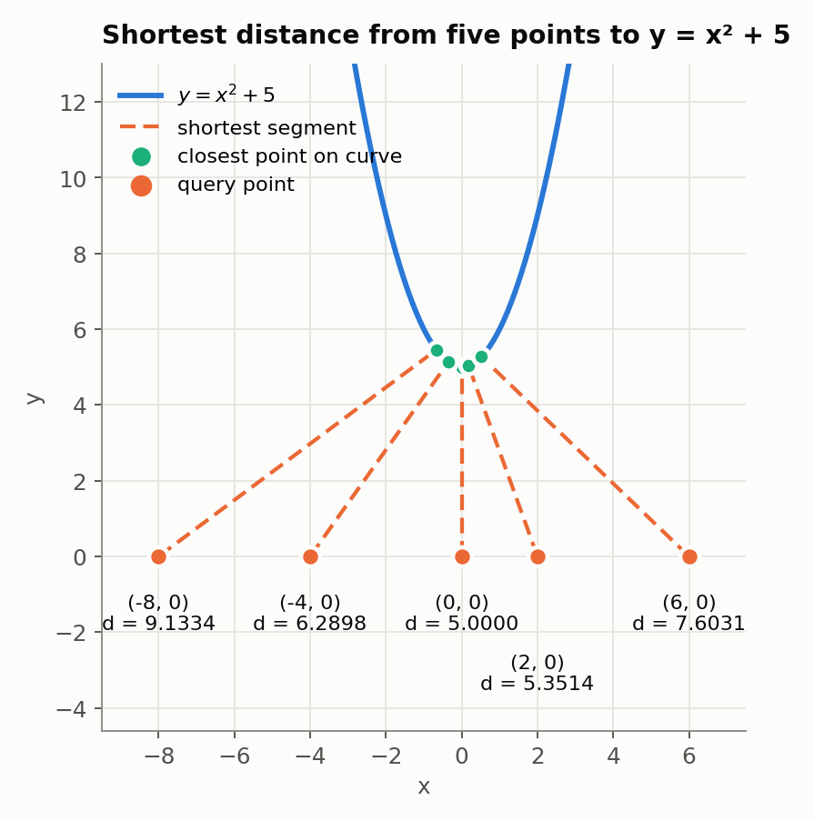
Numerical method A: Newton–Raphson
Newton’s method is applied to the root of \(D'\): \[x_{k+1}=x_k-\frac{D'(x_k)}{D''(x_k)} =x_k-\frac{2(x_k-x_0)+2(f(x_k)-y_0)f'(x_k)} {2+2f'(x_k)^{2}+2(f(x_k)-y_0)f''(x_k)} , \label{eq:newton}\] which for \(f(x)=x^{2}+5\), \(y_0=0\) simplifies to \[x_{k+1}=x_k-\frac{4x_k^{3}+22x_k-2x_0}{12x_k^{2}+22} =\frac{8x_k^{3}+2x_0}{12x_k^{2}+22} =\boxed{\;\frac{4x_k^{3}+x_0}{6x_k^{2}+11}\;} \label{eq:newtonours}\] Every run starts at \(x^{(0)}=0\) with tolerance \(10^{-7}\), so the first step is always \(x_1=x_0/11\).
Worked in full: the point \((-4,0)\).
\[\begin{aligned} x_1&=\frac{4(0)^{3}-4}{6(0)^{2}+11}=\frac{-4}{11}=-0.3636364,\\ x_2&=\frac{4(-0.3636364)^{3}-4}{6(-0.3636364)^{2}+11} =\frac{-0.1923366-4}{11.7933884}=-0.3554819,\\ x_3&=\frac{4(-0.3554819)^{3}-4}{6(-0.3554819)^{2}+11} =\frac{-0.1796676-4}{11.7581771}=-0.3554697,\\ x_4&=-0.3554697 \quad\Rightarrow\quad |x_4-x_3|<10^{-7},\ \text{stop}, \end{aligned}\] giving \(d=6.289845\). The number of correct digits roughly doubles per step (\(2\to5\to10\)): quadratic convergence.
| \(k\) | \(x_k\) | \(D(x_k)\) | \(D'(x_k)\) | \(D''(x_k)\) | \(x_{k+1}\) | \(|x_{k+1}-x_k|\) |
|---|---|---|---|---|---|---|
| 0 | \(0.0000000\) | \(41.000000\) | \(8.000000\) | \(22.000000\) | \(-0.3636364\) | \(3.64\times 10^{-1}\) |
| 1 | \(-0.3636364\) | \(39.562940\) | \(-0.192337\) | \(23.586777\) | \(-0.3554819\) | \(8.15\times 10^{-3}\) |
| 2 | \(-0.3554819\) | \(39.562155\) | \(-0.000288\) | \(23.516409\) | \(-0.3554697\) | \(1.22\times 10^{-5}\) |
| 3 | \(-0.3554697\) | \(39.562155\) | \(0.000000\) | \(23.516304\) | \(-0.3554697\) | \(2.72\times 10^{-11}\) |
| \(x_k\) for the query point \((x_0,y_0)\) | |||||
| \(k\) | \((0,0)\) | \((-4,0)\) | \((-8,0)\) | \((2,0)\) | \((6,0)\) |
| 0 | \(0.0000000\) | \(0.0000000\) | \(0.0000000\) | \(0.0000000\) | \(0.0000000\) |
| 1 | \(\mathbf{0.0000000}\) | \(-0.3636364\) | \(-0.7272727\) | \(0.1818182\) | \(0.5454545\) |
| 2 | \(-0.3554819\) | \(-0.6729923\) | \(0.1807447\) | \(0.5200682\) | |
| 3 | \(-0.3554697\) | \(-0.6720784\) | \(0.1807446\) | \(0.5199037\) | |
| 4 | \(\mathbf{-0.3554697}\) | \(-0.6720781\) | \(\mathbf{0.1807446}\) | \(\mathbf{0.5199037}\) | |
| 5 | \(\mathbf{-0.6720781}\) | ||||
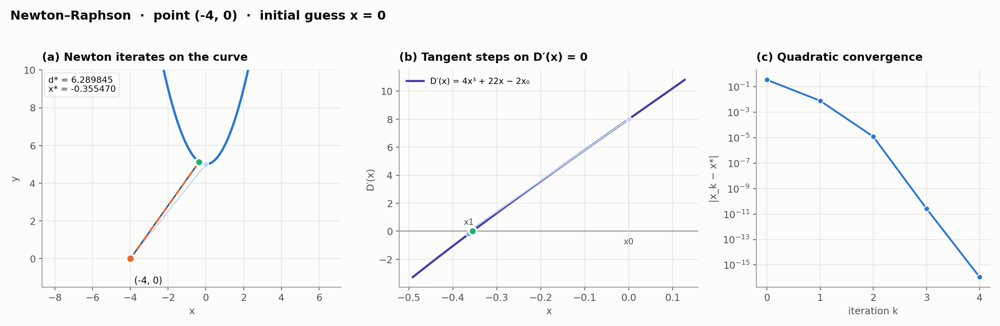
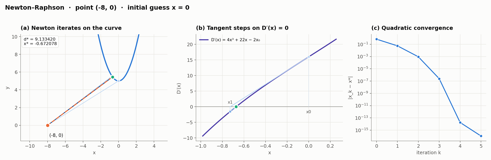
Numerical method B: golden section search
The bracket \([a,b]\) carries two interior probes, \[x_1=a+r(b-a),\qquad x_2=b-r(b-a),\qquad r=2-\varphi=\frac{3-\sqrt5}{2}=0.381966,\quad \varphi=1.618034 .\] If \(D(x_1)<D(x_2)\) the minimum of a unimodal \(D\) cannot lie in \((x_2,b]\), so \(b\leftarrow x_2\); otherwise \(a\leftarrow x_1\). The golden ratio places the surviving probe exactly where the new bracket needs one, so each iteration costs one new evaluation of \(D\) and shrinks the bracket by \(1/\varphi=0.618034\). No derivatives are used. Starting from \([-10,10]\) with tolerance \(10^{-7}\), \[20\,\varphi^{-n}<10^{-7} \;\Longrightarrow\; n>\frac{\ln(20/10^{-7})}{\ln 1.618034}=\frac{19.1138}{0.4812}=39.72 \;\Longrightarrow\; n=40 \label{eq:goldeniters}\] iterations for every point.
Worked in full: the point \((-4,0)\).
At \(x=\pm2.3607\), \(x^{2}+5=10.5729\), so \[\begin{aligned} x_1&=-10+0.381966(20)=-2.3607, \qquad x_2=10-0.381966(20)=2.3607,\\ D(x_1)&=(-2.3607+4)^{2}+(10.5729)^{2}=(1.6393)^{2}+111.786=114.47,\\ D(x_2)&=(2.3607+4)^{2}+(10.5729)^{2}=(6.3607)^{2}+111.786=152.24 . \end{aligned}\] Since \(114.47<152.24\), \(b\leftarrow x_2\) and the bracket becomes \([-10,\ 2.3607]\). The old \(x_1\) becomes the new \(x_2\), so only \(x_1=-10+0.381966(12.3607)=-5.2786\) is evaluated, with \(D=1081.68\). Continuing:
crrrrrrcr
\(k\) & \(a\) & \(b\) & \(x_1\) & \(x_2\) & \(D(x_1)\) & \(D(x_2)\) & update & \(b-a\)
& \(-10.0000\) & \(10.0000\) & \(-2.3607\) & \(2.3607\) & \(114.4717\) & \(152.2425\) & \(b\leftarrow x_2\) & \(20.0000\)
1 & \(-10.0000\) & \(2.3607\) & \(-5.2786\) & \(-2.3607\) & \(1081.6804\) & \(114.4717\) & \(a\leftarrow x_1\) & \(12.3607\)
2 & \(-5.2786\) & \(2.3607\) & \(-2.3607\) & \(-0.5573\) & \(114.4717\) & \(40.0544\) & \(a\leftarrow x_1\) & \(7.6393\)
3 & \(-2.3607\) & \(2.3607\) & \(-0.5573\) & \(0.5573\) & \(40.0544\) & \(48.9709\) & \(b\leftarrow x_2\) & \(4.7214\)
4 & \(-2.3607\) & \(0.5573\) & \(-1.2461\) & \(-0.5573\) & \(50.5232\) & \(40.0544\) & \(a\leftarrow x_1\) & \(2.9180\)
5 & \(-1.2461\) & \(0.5573\) & \(-0.5573\) & \(-0.1316\) & \(40.0544\) & \(40.1382\) & \(b\leftarrow x_2\) & \(1.8034\)
6 & \(-1.2461\) & \(-0.1316\) & \(-0.8204\) & \(-0.5573\) & \(42.2933\) & \(40.0544\) & \(a\leftarrow x_1\) & \(1.1146\)
7 & \(-0.8204\) & \(-0.1316\) & \(-0.5573\) & \(-0.3947\) & \(40.0544\) & \(39.5803\) & \(a\leftarrow x_1\) & \(0.6888\)
40 & \(-0.3554697\) & \(-0.3554696\) & & & \(8.74\times 10^{-8}\)
The first probes are always \(\mp2.3607\), so for the other points only \((x-x_0)^{2}\) changes. The pair \(\bigl(D(-2.3607),\,D(2.3607)\bigr)\) is \((117.36,\,117.36)\) for \((0,0)\); \((143.59,\,219.13)\) for \((-8,0)\); \((130.80,\,111.91)\) for \((2,0)\); and \((181.69,\,125.03)\) for \((6,0)\). Each case takes 40 iterations.
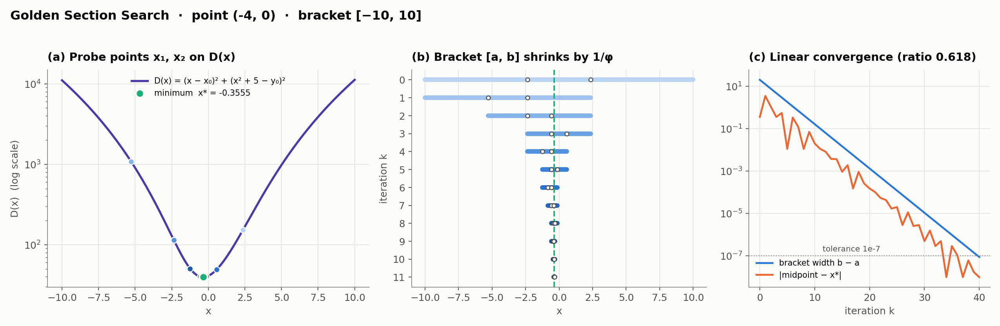
Results for the assigned points
| Analytical | Newton–Raphson | Golden section | |||||
| \((x_0,y_0)\) | \(x^\ast\) | \(d\) | \(d\) | iters | \(d\) | iters | \(\max|\Delta d|\) |
| \((0,0)\) | \(0.000000\) | \(5.000000\) | \(5.000000\) | 1 | \(5.000000\) | 40 | \(8.9\times 10^{-16}\) |
| \((-4,0)\) | \(-0.355470\) | \(6.289845\) | \(6.289845\) | 4 | \(6.289845\) | 40 | \(1.8\times 10^{-15}\) |
| \((-8,0)\) | \(-0.672078\) | \(9.133420\) | \(9.133420\) | 5 | \(9.133420\) | 40 | \(0\) |
| \((2,0)\) | \(0.180745\) | \(5.351396\) | \(5.351396\) | 4 | \(5.351396\) | 40 | \(0\) |
| \((6,0)\) | \(0.519904\) | \(7.603125\) | \(7.603125\) | 4 | \(7.603125\) | 40 | \(8.9\times 10^{-16}\) |
\(d(0,0)=5.000000\) at \(x^{\ast}=0\); \(d(-4,0)=6.289845\) at \(x^{\ast}=-0.355470\); \(d(-8,0)=9.133420\) at \(x^{\ast}=-0.672078\); \(d(2,0)=5.351396\) at \(x^{\ast}=0.180745\); \(d(6,0)=7.603125\) at \(x^{\ast}=0.519904\).
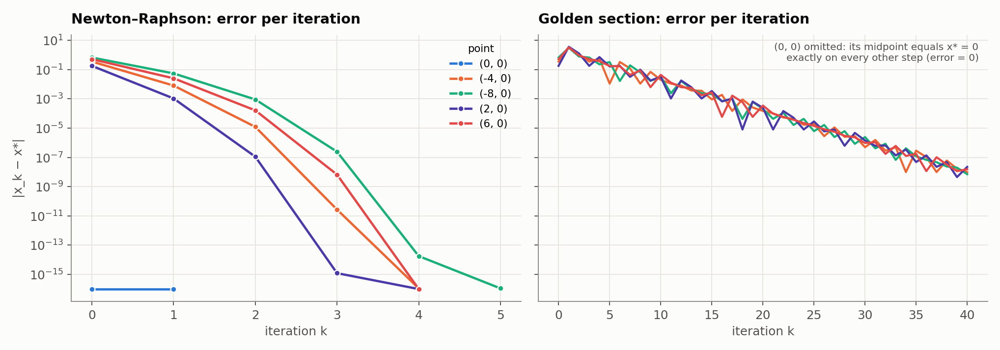
Python implementation
distance.py (the Part 1 listing below) implements both numerical methods for any point
and any curve:
analytical_parabola(x0, y0, a, b, c)— for \(y=ax^{2}+bx+c\), condition \(\eqref{eq:Dprime}\) expands to the cubic \[2a^{2}x^{3}+3abx^{2}+\bigl(b^{2}+2a(c-y_0)+1\bigr)x+\bigl(b(c-y_0)-x_0\bigr)=0 , \label{eq:generalcubic}\] solved by a hand-written Cardano solver; the real root with the smallest \(D\) is returned.newton_distance(...)— equation \(\eqref{eq:newton}\). Ifdf/ddfare omitted, central differences are used;domain=(lo,hi)clips iterates into the domain of \(f\). Every step is recorded, which is what the step plots draw.golden_section(...)— the bracket method, recording every bracket.distance_to_parabola(...)anddistance_to_curve(...)— run all methods on any point and any parabola, or on any \(f\) without derivatives.
>>> from distance import distance_to_parabola
>>> distance_to_parabola(-4, 0, a=1, b=0, c=5)
{'analytical': (6.289845364298704, -0.35546969287483443),
'newton': (6.289845364298704, -0.3554696928748345, 4), # (d, x*, iterations)
'golden': (6.2898453642987056, -0.3554696829624632, 40)}Other parabolas and non-polynomial functions
The same routines were applied to two further parabolas and to exponential, logarithmic, radical, rational (variable in the denominator) and cube-root functions. Each result is checked against a brute-force search over 400,001 grid points, and the parabolas also against \(\eqref{eq:generalcubic}\).
| \(y=f(x)\) | type | \((x_0,y_0)\) | \(x^\ast\) | \(d\) (Newton) | iters | \(d\) (golden) | \(d\) (grid) | \(d\) (exact) |
|---|---|---|---|---|---|---|---|---|
| \(y=\tfrac12x^2-2x+1\) | parabola | \((5,-2)\) | \(3.134728\) | \(2.486228\) | 10 | \(2.486228\) | \(2.486228\) | \(2.486228\) |
| \(y=-x^2+4x-1\) | parabola | \((-1,4)\) | \(1.264861\) | \(2.739072\) | 9 | \(2.739072\) | \(2.739072\) | \(2.739072\) |
| \(y=e^{x}\) | exponential | \((2,1)\) | \(0.582871\) | \(1.623025\) | 9 | \(1.623025\) | \(1.623025\) | — |
| \(y=\ln x\) | logarithmic | \((0,1)\) | \(1.000000\) | \(1.414214\) | 9 | \(1.414214\) | \(1.414214\) | — |
| \(y=\sqrt{x}\) | radical | \((4,0)\) | \(3.500000\) | \(1.936492\) | 3 | \(1.936492\) | \(1.936492\) | — |
| \(y=\dfrac{1}{x}\) | rational (\(x\) in denom.) | \((0,0)\) | \(1.000000\) | \(1.414214\) | 11 | \(1.414214\) | \(1.414214\) | — |
| \(y=\dfrac{4}{1+x^2}\) | rational (\(x\) in denom.) | \((3,3)\) | \(1.000000\) | \(2.236068\) | 6 | \(2.236068\) | \(2.236068\) | — |
| \(y=\sqrt[3]{x}\) | cube root | \((-1,2)\) | \(0.230350\) | \(1.854055\) | 39 | \(1.854055\) | \(1.854055\) | — |
Three changes cover the non-polynomial cases. Domain: \(\ln x\), \(\sqrt x\) and \(1/x\) exist only for \(x>0\), so Newton steps are clipped back into the domain and the bracket is chosen inside it. Derivatives: \(f'\) and \(f''\) come from central differences (\(h=10^{-5}\), \(10^{-4}\)), so no calculus is needed per function. Smoothness: \(\sqrt[3]{x}\) has infinite slope at \(x=0\), so Newton needs 39 iterations instead of about 5, while golden section is unaffected. Note also that \(D'(x)=0\) is no longer solvable in closed form: for \(y=e^{x}\) and \((2,1)\) it reads \((x-2)+(e^{x}-1)e^{x}=0\).
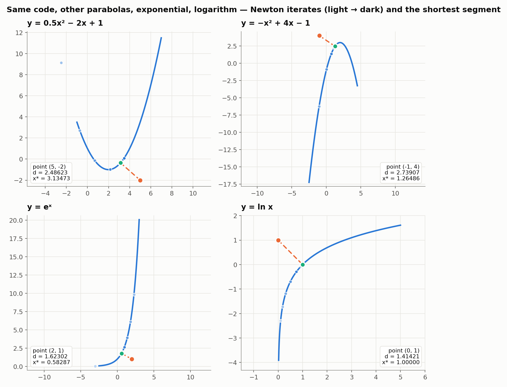
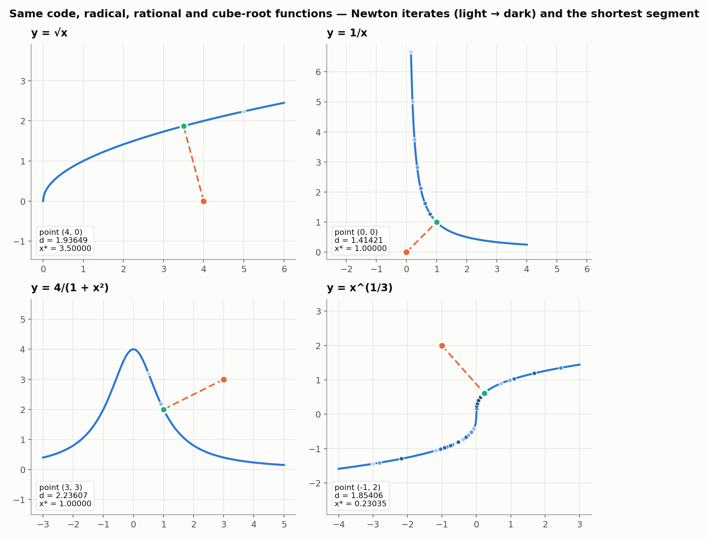
Fitting a line and a parabola
Problem. For \((0,0.5)\), \((2,3.5)\), \((1,1.5)\), \((3,7.5)\), fit a line and a parabola by minimising the mean squared error. Set up the MSE, solve analytically and with multivariate Newton–Raphson optimising one parameter at a time, and report the MSE of each fit. Supply code and plots of the intermediate steps.
Setting up the MSE
With \(n=4\) points, \[\begin{aligned} \mathrm{MSE}_{\text{line}}(m,b)&=\frac1n\sum_{i=1}^{n}\bigl(mx_i+b-y_i\bigr)^{2}, \label{eq:mseline}\\ \mathrm{MSE}_{\text{parab}}(a,b,c)&=\frac1n\sum_{i=1}^{n}\bigl(ax_i^{2}+bx_i+c-y_i\bigr)^{2}. \end{aligned}\] Both are quadratic in their parameters, so each has a unique minimiser. The required sums:
| \(x_i\) | \(y_i\) | \(x_i^{2}\) | \(x_i^{3}\) | \(x_i^{4}\) | \(x_iy_i\) | \(x_i^{2}y_i\) |
|---|---|---|---|---|---|---|
| 0 | 0.5 | 0 | 0 | 0 | 0 | 0 |
| 1 | 1.5 | 1 | 1 | 1 | 1.5 | 1.5 |
| 2 | 3.5 | 4 | 8 | 16 | 7 | 14 |
| 3 | 7.5 | 9 | 27 | 81 | 22.5 | 67.5 |
| \(\Sigma=6\) | 13 | 14 | 36 | 98 | 31 | 83 |
Differentiating \(\eqref{eq:mseline}\) and substituting the sums: \[\begin{aligned} \frac{\partial\mathrm{MSE}}{\partial m}&=\frac2n\sum_i(mx_i+b-y_i)x_i=\tfrac12(14m+6b-31), &\frac{\partial^{2}\mathrm{MSE}}{\partial m^{2}}&=7, \label{eq:gradm}\\ \frac{\partial\mathrm{MSE}}{\partial b}&=\frac2n\sum_i(mx_i+b-y_i)=\tfrac12(6m+4b-13), &\frac{\partial^{2}\mathrm{MSE}}{\partial b^{2}}&=2, \label{eq:gradb} \end{aligned}\] with cross term \(\partial^{2}\mathrm{MSE}/\partial m\,\partial b=3\). The parabola follows the same pattern with one more parameter.
Analytical solution
Line.
Setting \(\eqref{eq:gradm}\) and \(\eqref{eq:gradb}\) to zero gives the normal equations \[\begin{bmatrix}14&6\\6&4\end{bmatrix}\begin{bmatrix}m\\b\end{bmatrix} =\begin{bmatrix}31\\13\end{bmatrix}, \qquad \det=14(4)-6(6)=20,\] \[m=\frac{4(31)-6(13)}{20}=\frac{46}{20}=\mathbf{2.3}, \qquad b=\frac{14(13)-6(31)}{20}=\frac{-4}{20}=\mathbf{-0.2}.\] Fitted values \(-0.2,\ 2.1,\ 4.4,\ 6.7\) at \(x=0,1,2,3\); residuals \(-0.7,\ 0.6,\ 0.9,\ -0.8\); so \[\mathrm{MSE}_{\text{line}}=\tfrac14(0.49+0.36+0.81+0.64)=\frac{2.30}{4}=\mathbf{0.575}.\]
Parabola.
The three normal equations, reduced by Gaussian elimination: \[\left[\begin{array}{ccc|c} 98&36&14&83\\ 36&14&6&31\\ 14&6&4&13 \end{array}\right] \longrightarrow \left[\begin{array}{ccc|c} 98&36&14&83\\[2pt] 0&\tfrac{38}{49}&\tfrac67&\tfrac{25}{49}\\[3pt] 0&0&\tfrac{20}{19}&\tfrac{11}{19} \end{array}\right]\] Back-substitution: \[\begin{aligned} c&=\tfrac{11}{19}\cdot\tfrac{19}{20}=\tfrac{11}{20}=\mathbf{0.55},\\ 38b&=25-42(0.55)=1.9 \;\Rightarrow\; b=\mathbf{0.05},\\ 98a&=83-36(0.05)-14(0.55)=73.5 \;\Rightarrow\; a=\mathbf{0.75}. \end{aligned}\] Fitted values \(0.55,\ 1.35,\ 3.65,\ 7.45\); residuals \(0.05,\ -0.15,\ 0.15,\ -0.05\); so \[\mathrm{MSE}_{\text{parab}}=\tfrac14(0.0025+0.0225+0.0225+0.0025)=\frac{0.05}{4}=\mathbf{0.0125}.\]
Answers. Line: \(y=2.3x-0.2\) with \(\mathrm{MSE}=0.575\). Parabola: \(y=0.75x^{2}+0.05x+0.55\) with \(\mathrm{MSE}=0.0125\).
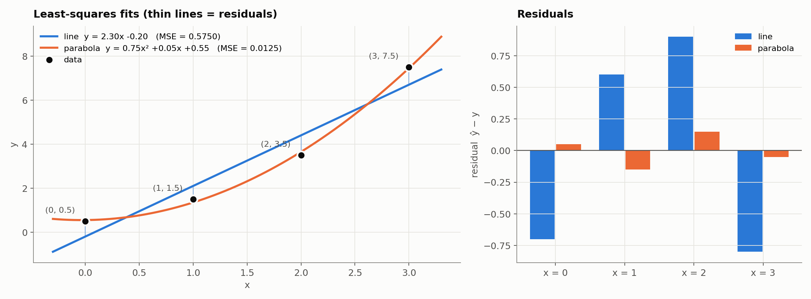
Numerical solution: Newton–Raphson, one parameter per step
Each step optimises one parameter with the others held fixed, by a one-dimensional Newton–Raphson step on that parameter’s partial derivative: \[\theta_j\leftarrow\theta_j-\frac{\partial\mathrm{MSE}/\partial\theta_j} {\partial^{2}\mathrm{MSE}/\partial\theta_j^{2}}, \qquad j=1,2,\dots\ \text{cyclically}. \label{eq:coord}\] For the line, substituting \(\eqref{eq:gradm}\) and \(\eqref{eq:gradb}\), \[m\leftarrow m-\frac{\tfrac12(14m+6b-31)}{7}=\frac{31-6b}{14}, \qquad b\leftarrow b-\frac{\tfrac12(6m+4b-13)}{2}=\frac{13-6m}{4}, \label{eq:coordline}\] and for the parabola \[a\leftarrow\frac{83-36b-14c}{98},\qquad b\leftarrow\frac{31-36a-6c}{14},\qquad c\leftarrow\frac{13-14a-6b}{4}.\] Since the MSE is quadratic in each parameter separately, each one-dimensional Newton step lands exactly on that parameter’s minimiser given the others.
Line, starting from \(m=b=0\).
\[\begin{aligned} m_1&=\frac{31-6(0)}{14}=2.214286, &b_1&=\frac{13-6(2.214286)}{4}=-0.071429,\\ m_2&=\frac{31.428571}{14}=2.244898, &b_2&=\frac{13-6(2.244898)}{4}=-0.117347,\\ m_3&=\frac{31.704082}{14}=2.264577, &b_3&=-0.146866 . \end{aligned}\] Substituting the \(b\) update into the \(m\) update, \[m_{k+1}=\frac{31-6\bigl(\frac{13-6m_k}{4}\bigr)}{14}=\frac{11.5+9m_k}{14},\] a linear fixed-point iteration with fixed point \(m=11.5/5=2.3\) and contraction ratio \(9/14=0.642857\), so the error falls by about \(36\%\) per sweep. Convergence is linear, not quadratic, because the steps are restricted to the coordinate directions and ignore the cross term \(\partial^{2}\mathrm{MSE}/\partial m\,\partial b=3\).
Parabola, starting from \(a=b=c=0\).
\[\begin{aligned} a_1&=\frac{83}{98}=0.846939,\qquad b_1=\frac{31-36(0.846939)}{14}=0.036443,\\ c_1&=\frac{13-14(0.846939)-6(0.036443)}{4}=0.231050,\qquad \mathrm{MSE}=0.117988,\\ a_2&=\frac{83-36(0.036443)-14(0.231050)}{98}=0.800544,\qquad b_2=0.056723,\\ c_2&=\frac{13-14(0.800544)-6(0.056723)}{4}=0.363013,\qquad \mathrm{MSE}=0.046400 . \end{aligned}\]
| sweep | updated | \(m\) | \(b\) | MSE |
|---|---|---|---|---|
| 0 | start | \(0.000000\) | \(0.000000\) | \(17.750000\) |
| 1 | \(m\) | \(2.214286\) | \(0.000000\) | \(0.589286\) |
| 1 | \(b\) | \(2.214286\) | \(-0.071429\) | \(0.584184\) |
| 2 | \(m\) | \(2.244898\) | \(-0.071429\) | \(0.580904\) |
| 2 | \(b\) | \(2.244898\) | \(-0.117347\) | \(0.578795\) |
| 3 | \(m\) | \(2.264577\) | \(-0.117347\) | \(0.577440\) |
| 3 | \(b\) | \(2.264577\) | \(-0.146866\) | \(0.576568\) |
| 4 | \(m\) | \(2.277228\) | \(-0.146866\) | \(0.576008\) |
| 4 | \(b\) | \(2.277228\) | \(-0.165842\) | \(0.575648\) |
| 5 | \(m\) | \(2.285361\) | \(-0.165842\) | \(0.575417\) |
| 5 | \(b\) | \(2.285361\) | \(-0.178042\) | \(0.575268\) |
| 6 | \(m\) | \(2.290589\) | \(-0.178042\) | \(0.575172\) |
| 6 | \(b\) | \(2.290589\) | \(-0.185884\) | \(0.575111\) |
| \(\vdots\)converged after 48 sweeps to \(m=2.3000,\;b=-0.2000\), MSE \(=0.5750\) \(\vdots\) | ||||
| sweep | updated | \(a\) | \(b\) | \(c\) | MSE |
|---|---|---|---|---|---|
| 0 | start | \(0.000000\) | \(0.000000\) | \(0.000000\) | \(17.750000\) |
| 1 | \(a\) | \(0.846939\) | \(0.000000\) | \(0.000000\) | \(0.176020\) |
| 1 | \(b\) | \(0.846939\) | \(0.036443\) | \(0.000000\) | \(0.171372\) |
| 1 | \(c\) | \(0.846939\) | \(0.036443\) | \(0.231050\) | \(0.117988\) |
| 2 | \(a\) | \(0.800544\) | \(0.036443\) | \(0.231050\) | \(0.065253\) |
| 2 | \(b\) | \(0.800544\) | \(0.056722\) | \(0.231050\) | \(0.063814\) |
| 2 | \(c\) | \(0.800544\) | \(0.056722\) | \(0.363012\) | \(0.046400\) |
| 3 | \(a\) | \(0.774243\) | \(0.056722\) | \(0.363012\) | \(0.029452\) |
| 3 | \(b\) | \(0.774243\) | \(0.067798\) | \(0.363012\) | \(0.029023\) |
| 3 | \(c\) | \(0.774243\) | \(0.067798\) | \(0.438452\) | \(0.023332\) |
| 4 | \(a\) | \(0.759398\) | \(0.067798\) | \(0.438452\) | \(0.017932\) |
| 4 | \(b\) | \(0.759398\) | \(0.073641\) | \(0.438452\) | \(0.017813\) |
| 4 | \(c\) | \(0.759398\) | \(0.073641\) | \(0.481647\) | \(0.015947\) |
| \(\vdots\)converged after 476 sweeps to \(a=0.7500,\;b=0.0500,\;c=0.5500\), MSE \(=0.0125\) \(\vdots\) | |||||
Comparison: the full multivariate Newton step.
Updating all parameters together, \(\boldsymbol\theta\leftarrow\boldsymbol\theta-H^{-1}\nabla\mathrm{MSE}\), uses the cross terms and minimises a quadratic in one step: \[\begin{bmatrix}m\\b\end{bmatrix} =\begin{bmatrix}0\\0\end{bmatrix} -\begin{bmatrix}7&3\\3&2\end{bmatrix}^{-1}\begin{bmatrix}-15.5\\-6.5\end{bmatrix} =\frac15\begin{bmatrix}2&-3\\-3&7\end{bmatrix}\begin{bmatrix}15.5\\6.5\end{bmatrix} =\begin{bmatrix}2.3\\-0.2\end{bmatrix}.\] The parabola’s normal matrix is far worse conditioned (\(\approx363\) against \(\approx14\) for the line), so its coordinate iteration needs about 480 sweeps to reach \(10^{-10}\) against about 50 for the line, while the full step needs one for either model.
Results
| model | method | parameters | MSE | cost |
|---|---|---|---|---|
| Line | Analytical (normal equations) | \(m=2.3000,\; b=-0.2000\) | \(0.5750\) | — |
| Line | Newton, one parameter at a time | \(m=2.3000,\; b=-0.2000\) | \(0.5750\) | 48 sweeps |
| Line | Newton, full multivariate step | \(m=2.3000,\; b=-0.2000\) | \(0.5750\) | 1 step |
| Parabola | Analytical (normal equations) | \(a=0.7500,\; b=0.0500,\; c=0.5500\) | \(0.0125\) | — |
| Parabola | Newton, one parameter at a time | \(a=0.7500,\; b=0.0500,\; c=0.5500\) | \(0.0125\) | 476 sweeps |
| Parabola | Newton, full multivariate step | \(a=0.7500,\; b=0.0500,\; c=0.5500\) | \(0.0125\) | 1 step |
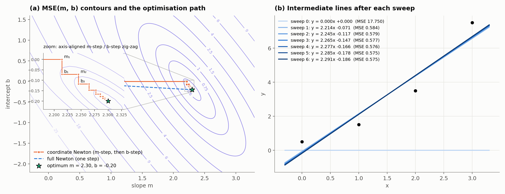
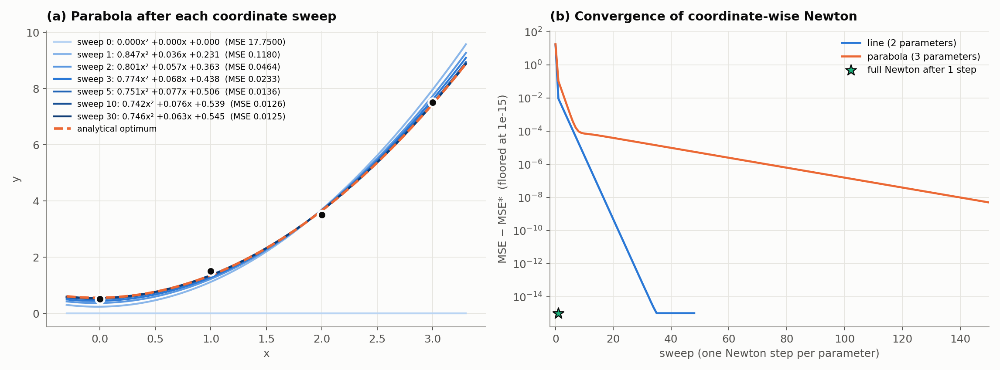
Python implementation
fitting.py (the Part 2 listing below) writes both models as
\(\hat{\mathbf y}=\Phi\boldsymbol\theta\), with \(\Phi=[\,\mathbf x\ \ \mathbf 1\,]\) for the line and
\([\,\mathbf x^{2}\ \ \mathbf x\ \ \mathbf 1\,]\) for the parabola, so one gradient and one Hessian
serve both models and any degree:
\[\nabla \mathrm{MSE}=\frac2n\Phi^{\mathsf{T}}(\Phi\boldsymbol\theta-\mathbf y),
\qquad
H=\frac2n\Phi^{\mathsf{T}}\Phi .\]
The three solvers are normal_equations (analytical, via a hand-written Gaussian
elimination), coordinate_newton (equation \(\eqref{eq:coord}\), which records every
sub-step), and full_newton for comparison.
Intermediate-step plots for the remaining points
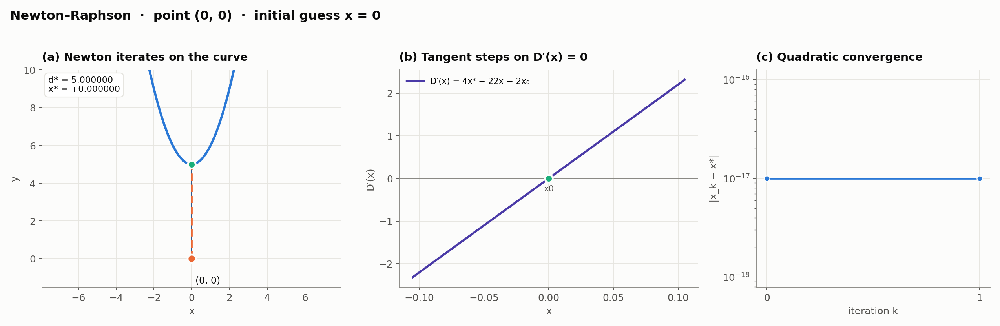
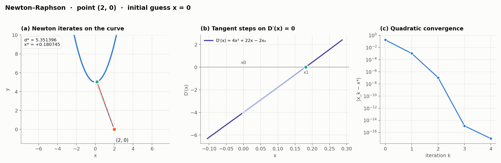
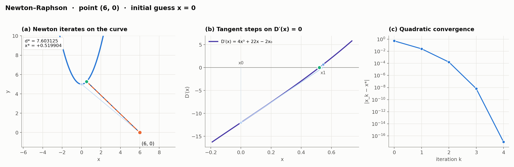
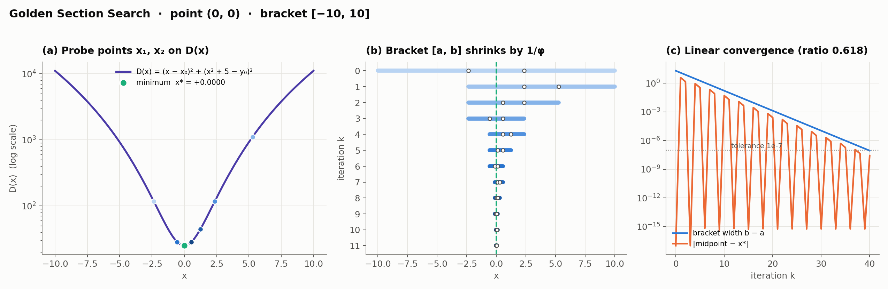
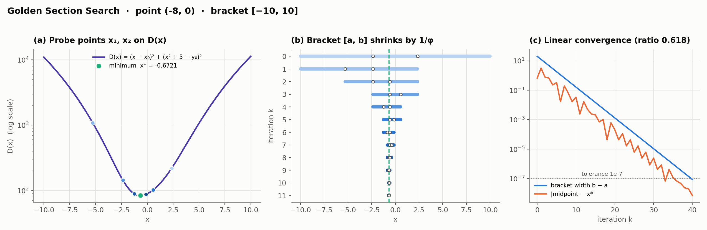
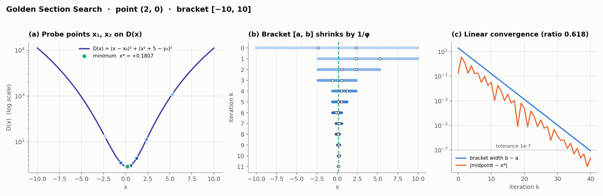
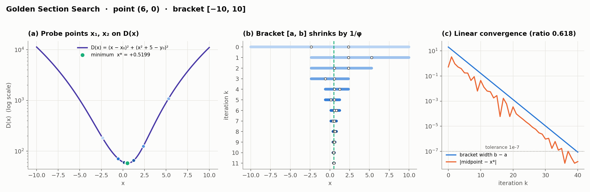
distance.py — Part 1 code
"""
SYDE 572 - Assignment 1, Part 1
================================
Shortest distance from a point (x0, y0) to a curve y = f(x).
Run this file to reproduce every Part 1 result:
python distance.py
It prints the result tables and writes all Part 1 figures to ../media/.
Contents
--------
Section 1 The objective function D(x) and its derivatives
Section 2 Analytical solution for a parabola (Cardano's cubic formula)
Section 3 Numerical method A: Newton-Raphson on D'(x) = 0
Section 4 Numerical method B: Golden section search on D(x)
Section 5 Convenience wrappers (any point, any parabola, any function)
Section 6 Plotting helpers
Section 7 Demonstrations: the assigned points, other curves, non-polynomial
functions, and a case with several stationary points
Only numpy and matplotlib are used, and no optimisation library: the three
solvers, the cubic solver and the finite-difference derivatives are all written
out here.
"""
import math
import os
import matplotlib
matplotlib.use("Agg") # write PNG files, no interactive window
import matplotlib.pyplot as plt
import numpy as np
from matplotlib.colors import LinearSegmentedColormap
# The golden ratio and the fraction of the bracket used by golden section search.
PHI = (1 + math.sqrt(5)) / 2 # 1.618034
RESPHI = 2 - PHI # 1/phi^2 = 0.381966
MEDIA = os.path.join(os.path.dirname(os.path.abspath(__file__)), "..", "media")
# =============================================================================
# Section 1. The objective function
# =============================================================================
def dist_sq(x, x0, y0, f):
"""Squared distance D(x) from the point (x0, y0) to the curve point (x, f(x)).
The true distance is sqrt(D(x)). Because the square root is monotonically
increasing, the x that minimises D also minimises the distance, so every
solver below works with D and takes the square root only at the very end.
"""
return (x - x0) ** 2 + (f(x) - y0) ** 2
def _finite(v):
"""True if v is a usable number (not NaN or +-inf)."""
return isinstance(v, (int, float, np.floating)) and math.isfinite(float(v))
def numeric_d1(f, h=1e-5):
"""First derivative of f by central differences: used when f' is unknown.
Returned as a function so it can be dropped in wherever an analytic
derivative would go. h = 1e-5 keeps the truncation error (order h^2) and
the floating-point cancellation error (order eps/h) comparably small.
Near the edge of the domain (e.g. ln x at x = 1e-6) one of the two sample
points can fall outside it and return NaN, so the routine falls back to a
one-sided difference there.
"""
def d1(x):
fp, fm_ = f(x + h), f(x - h)
if _finite(fp) and _finite(fm_):
return (fp - fm_) / (2 * h)
if _finite(fp): # forward difference
return (fp - f(x)) / h
return (f(x) - fm_) / h # backward difference
return d1
def numeric_d2(f, h=1e-4):
"""Second derivative of f by central differences (larger h: divides by h^2).
Same domain-edge fallback as numeric_d1: if a sample point is outside the
domain, the stencil is shifted to one side.
"""
def d2(x):
f0, fp, fm_ = f(x), f(x + h), f(x - h)
if _finite(fp) and _finite(fm_):
return (fp - 2 * f0 + fm_) / (h * h)
if _finite(fp): # forward stencil
return (f(x + 2 * h) - 2 * fp + f0) / (h * h)
return (f0 - 2 * fm_ + f(x - 2 * h)) / (h * h)
return d2
# =============================================================================
# Section 2. Analytical solution for a parabola
# =============================================================================
def _cbrt(v):
"""Real cube root, including for negative v (v ** (1/3) fails for v < 0)."""
return math.copysign(abs(v) ** (1 / 3), v)
def solve_cubic(A, B, C, D):
"""All real roots of A x^3 + B x^2 + C x + D = 0 (A != 0).
Substituting x = t - B/(3A) removes the quadratic term and leaves the
depressed cubic t^3 + p t + q = 0, which Cardano's formula solves. The sign
of the discriminant decides how many real roots there are:
disc > 0 -> one real root (two cube roots added)
disc < 0 -> three real roots (trigonometric form; cube roots of a
complex number would be needed instead)
disc = 0 -> a repeated root
"""
b, c, d = B / A, C / A, D / A
p = c - b * b / 3
q = 2 * b ** 3 / 27 - b * c / 3 + d
shift = -b / 3 # undo the substitution later
disc = (q / 2) ** 2 + (p / 3) ** 3
if disc > 1e-14: # one real root
s = math.sqrt(disc)
t = [_cbrt(-q / 2 + s) + _cbrt(-q / 2 - s)]
elif disc < -1e-14: # three distinct real roots
r = 2 * math.sqrt(-p / 3)
phi = math.acos(3 * q / (p * r))
t = [r * math.cos((phi - 2 * math.pi * k) / 3) for k in range(3)]
else: # repeated roots
u = _cbrt(-q / 2)
t = [2 * u, -u]
return sorted(ti + shift for ti in t)
def analytical_parabola(x0, y0, a, b, c):
"""Exact closest point on the parabola y = a x^2 + b x + c to (x0, y0).
Setting D'(x) = 0 gives
(x - x0) + (a x^2 + b x + c - y0)(2a x + b) = 0,
which expands to the cubic
2a^2 x^3 + 3ab x^2 + (b^2 + 2a(c - y0) + 1) x + (b(c - y0) - x0) = 0.
Every real root is a stationary point of D, so the root with the smallest D
is the answer (D -> infinity as |x| -> infinity, so a minimum always exists).
If a = 0 the "parabola" is the straight line y = b x + c, for which the
condition is linear and gives x* = (x0 + b(y0 - c)) / (1 + b^2) directly.
Returns (distance, x*, all real roots).
"""
f = lambda x: a * x * x + b * x + c
k = c - y0
if a == 0: # degenerate case: a line
xs = (x0 + b * (y0 - c)) / (1 + b * b)
return math.sqrt(dist_sq(xs, x0, y0, f)), xs, [xs]
roots = solve_cubic(2 * a * a, 3 * a * b, b * b + 2 * a * k + 1, b * k - x0)
best = min(roots, key=lambda x: dist_sq(x, x0, y0, f))
return math.sqrt(dist_sq(best, x0, y0, f)), best, roots
# =============================================================================
# Section 3. Numerical method A: Newton-Raphson
# =============================================================================
def newton_distance(x0, y0, f, df=None, ddf=None, initial_guess=0.0,
tolerance=1e-7, max_iter=100, domain=None):
"""Newton-Raphson applied to the root-finding problem D'(x) = 0.
D'(x) = 2(x - x0) + 2(f(x) - y0) f'(x)
D''(x) = 2 + 2 f'(x)^2 + 2(f(x) - y0) f''(x)
x_{k+1} = x_k - D'(x_k) / D''(x_k)
df, ddf : derivatives of f. If omitted, central differences are used, so
the routine works for any f the caller can evaluate.
domain : (lo, hi) to clip each iterate into the domain of f - needed for
ln x, sqrt(x), 1/x, where an unconstrained step can overshoot
into x <= 0 and produce NaN.
tolerance : stop once the step is smaller than this.
Returns (distance, x*, history), where history holds x_k, D, D', D'' and the
next iterate for every step, which is what the step plots are drawn from.
"""
df = df or numeric_d1(f)
ddf = ddf or numeric_d2(f)
x = initial_guess
history = []
for k in range(max_iter):
d1 = 2 * (x - x0) + 2 * (f(x) - y0) * df(x)
d2 = 2 + 2 * df(x) ** 2 + 2 * (f(x) - y0) * ddf(x)
next_x = x - d1 / d2 # the Newton step itself
if domain is not None:
next_x = min(max(next_x, domain[0]), domain[1])
history.append(dict(k=k, x=x, D=dist_sq(x, x0, y0, f),
d1=d1, d2=d2, next_x=next_x))
if abs(next_x - x) < tolerance:
x = next_x
break
x = next_x
return math.sqrt(dist_sq(x, x0, y0, f)), x, history
def newton_multistart(x0, y0, f, df=None, ddf=None, starts=(-5, -2, 0, 2, 5), **kw):
"""Run Newton from several starting guesses and keep the closest result.
Newton converges to a *stationary* point of D, which may be a local maximum
or a non-global minimum (see multiple_minima_demo). Trying several starts
is the cheapest guard against that.
"""
runs = [newton_distance(x0, y0, f, df, ddf, initial_guess=s, **kw) for s in starts]
# A run can diverge to NaN (e.g. a starting guess right on the edge of the
# domain of f); those are discarded rather than compared, since any
# comparison against NaN is False and would corrupt the minimum.
usable = [r for r in runs if math.isfinite(r[0])]
if not usable:
raise ValueError("every Newton start diverged; check the starting guesses or the domain")
return min(usable, key=lambda r: r[0])
# =============================================================================
# Section 4. Numerical method B: Golden section search
# =============================================================================
def golden_section(x0, y0, f, a, b, tolerance=1e-7, max_iter=500):
"""Golden section search for the minimum of D on the bracket [a, b].
Two interior probes are placed symmetrically:
x1 = a + r(b - a), x2 = b - r(b - a), r = 2 - phi = 0.381966.
If D(x1) < D(x2) the minimum of a unimodal D cannot lie in (x2, b], so the
bracket becomes [a, x2]; otherwise it becomes [x1, b]. The golden ratio is
chosen so the surviving probe is already in the right place for the new
bracket, so each iteration costs one new evaluation of D and shrinks the
bracket by 1/phi = 0.618.
No derivatives are used anywhere, which is the whole point of this method.
Returns (distance, x*, history) with the bracket and both probes per step.
"""
D = lambda x: dist_sq(x, x0, y0, f)
x1 = a + RESPHI * (b - a)
x2 = b - RESPHI * (b - a)
f1, f2 = D(x1), D(x2)
history = []
k = 0
while abs(b - a) > tolerance and k < max_iter:
history.append(dict(k=k, a=a, b=b, x1=x1, x2=x2, D1=f1, D2=f2))
if f1 < f2: # minimum is in [a, x2]; x1 becomes the new x2
b, x2, f2 = x2, x1, f1
x1 = a + RESPHI * (b - a)
f1 = D(x1)
else: # minimum is in [x1, b]; x2 becomes the new x1
a, x1, f1 = x1, x2, f2
x2 = b - RESPHI * (b - a)
f2 = D(x2)
k += 1
history.append(dict(k=k, a=a, b=b, x1=x1, x2=x2, D1=f1, D2=f2))
best_x = (a + b) / 2 # the midpoint of the final bracket
return math.sqrt(D(best_x)), best_x, history
# =============================================================================
# Section 5. Convenience wrappers
# =============================================================================
def parabola(a, b, c):
"""Return f, f', f'' for y = a x^2 + b x + c."""
return (lambda x: a * x * x + b * x + c,
lambda x: 2 * a * x + b,
lambda x: 2 * a)
def distance_to_parabola(x0, y0, a, b, c, bracket=(-10, 10)):
"""Distance from any point to any parabola, by all three methods.
>>> r = distance_to_parabola(-4, 0, a=1, b=0, c=5)
>>> round(r['analytical'][0], 6), round(r['newton'][0], 6), round(r['golden'][0], 6)
(6.289845, 6.289845, 6.289845)
"""
f, df, ddf = parabola(a, b, c)
da, xa, _ = analytical_parabola(x0, y0, a, b, c)
dn, xn, hn = newton_distance(x0, y0, f, df, ddf, initial_guess=0.0)
dg, xg, hg = golden_section(x0, y0, f, *bracket)
return dict(analytical=(da, xa),
newton=(dn, xn, len(hn)),
golden=(dg, xg, len(hg) - 1))
def distance_to_curve(x0, y0, f, bracket, domain=None, starts=None):
"""Distance from any point to any curve y = f(x), without needing f' or f''.
This is the "slight modification" asked for in the assignment: the
derivatives are estimated numerically and the search is confined to the
domain of f, so exponential, logarithmic, rational and radical functions all
work with the same two solvers.
"""
lo, hi = bracket
if starts is None:
starts = sorted({min(max(x0, lo + 0.1), hi - 0.1), (lo + hi) / 2,
lo + 0.25 * (hi - lo), lo + 0.75 * (hi - lo)})
dn, xn, hn = newton_multistart(x0, y0, f, starts=starts, domain=domain)
dg, xg, hg = golden_section(x0, y0, f, lo, hi)
# Brute-force reference: the minimum over a fine grid, used only as a check.
grid = np.linspace(lo, hi, 400001)
ref_x = float(grid[np.argmin(dist_sq(grid, x0, y0, f))])
return dict(newton=(dn, xn, len(hn)), newton_history=hn,
golden=(dg, xg, len(hg) - 1),
grid=(math.sqrt(dist_sq(ref_x, x0, y0, f)), ref_x))
# =============================================================================
# Section 6. Plotting helpers
# =============================================================================
INK, INK2, MUTED, GRID = "#0b0b0b", "#52514e", "#8a8984", "#e6e5e0"
BLUE, ORANGE, AQUA, VIOLET, RED = "#2a78d6", "#eb6834", "#1baf7a", "#4a3aa7", "#e34948"
SURFACE = "#fcfcfb"
# Light -> dark blue ramp: early iterates are pale, the converged one is dark.
ITER_CMAP = LinearSegmentedColormap.from_list("iter", ["#b9d4f3", "#2a78d6", "#0f3c75"])
plt.rcParams.update({
"figure.dpi": 110, "savefig.dpi": 170,
"figure.facecolor": SURFACE, "axes.facecolor": SURFACE, "savefig.facecolor": SURFACE,
"font.family": "DejaVu Sans", "font.size": 10.5,
"axes.edgecolor": MUTED, "axes.labelcolor": INK2, "axes.titlecolor": INK,
"axes.titlesize": 12, "axes.titleweight": "bold", "axes.titlelocation": "left",
"axes.titlepad": 10,
"axes.spines.top": False, "axes.spines.right": False,
"axes.grid": True, "grid.color": GRID, "grid.linewidth": 0.8,
"xtick.color": INK2, "ytick.color": INK2, "legend.frameon": False,
"lines.linewidth": 2, "mathtext.fontset": "dejavusans",
})
def save(fig, name):
"""Save a figure into ../media/ and report it."""
os.makedirs(MEDIA, exist_ok=True)
fig.savefig(os.path.join(MEDIA, name), bbox_inches="tight", pad_inches=0.15)
plt.close(fig)
print(" figure:", name)
def draw_shortest_segment(ax, x0, y0, xs, f):
"""Dashed segment from the query point to the closest curve point."""
ax.plot([x0, xs], [y0, f(xs)], color=ORANGE, lw=2, ls=(0, (4, 2)), zorder=4)
ax.scatter([xs], [f(xs)], s=70, color=AQUA, edgecolor=SURFACE, linewidth=2, zorder=6)
def draw_query_point(ax, x0, y0, text=None, dx=0.3, dy=-0.9):
ax.scatter([x0], [y0], s=80, color=ORANGE, edgecolor=SURFACE, linewidth=2, zorder=6)
if text:
ax.annotate(text, (x0, y0), xytext=(x0 + dx, y0 + dy), color=INK, fontsize=10)
def plot_overview(points, f, results, name="p1_overview.png"):
"""All five query points, their closest curve points and the distances."""
fig, ax = plt.subplots(figsize=(9, 5.6))
xs = np.linspace(-3.6, 3.6, 400)
ax.plot(xs, f(xs), color=BLUE, lw=2.5, label=r"$y = x^2 + 5$", zorder=3)
for (x0, y0), r in zip(points, results):
xa = r["analytical"][1]
ax.plot([x0, xa], [y0, f(xa)], color=ORANGE, lw=1.8, ls=(0, (4, 2)), zorder=4)
ax.scatter([xa], [f(xa)], s=60, color=AQUA, edgecolor=SURFACE, linewidth=2, zorder=6)
ax.scatter([x0], [y0], s=80, color=ORANGE, edgecolor=SURFACE, linewidth=2, zorder=6)
ax.annotate(f"({x0}, {y0})\nd = {r['analytical'][0]:.4f}", (x0, y0),
xytext=(0, -62 if x0 == 2 else -34), textcoords="offset points",
ha="center", fontsize=9.5, color=INK)
# legend proxies
ax.plot([], [], color=ORANGE, lw=1.8, ls=(0, (4, 2)), label="shortest segment")
ax.scatter([], [], s=60, color=AQUA, label="closest point on curve")
ax.scatter([], [], s=80, color=ORANGE, label="query point")
ax.set_xlim(-9.5, 7.5); ax.set_ylim(-4.6, 13)
ax.set_aspect("equal") # so the right angles look like right angles
ax.set_xlabel("x"); ax.set_ylabel("y")
ax.set_title("Shortest distance from five points to y = x² + 5")
ax.legend(loc="upper left", fontsize=9.5)
save(fig, name)
def plot_newton_steps(x0, y0, f, df, ddf, history, x_exact, x_final, d_final):
"""Three panels of Newton's intermediate steps for one query point.
(a) the iterates projected onto the curve
(b) the tangent construction on D'(x): each tangent is followed to its zero
(c) |x_k - x*| on a log scale, showing the quadratic collapse
"""
iterates = [h["x"] for h in history] + [x_final]
n = len(iterates)
cols = [ITER_CMAP(i / max(n - 1, 1)) for i in range(n)]
fig, axs = plt.subplots(1, 3, figsize=(15, 4.6),
gridspec_kw=dict(width_ratios=[1.15, 1.15, 0.9]))
# ---- (a) geometry -----------------------------------------------------
ax = axs[0]
lo, hi = min(x0, -2.5) - 1, max(x0, 2.5) + 1
xx = np.linspace(lo, hi, 400)
ax.plot(xx, f(xx), color=BLUE, lw=2.5, label="y = x² + 5")
for i, xi in enumerate(iterates):
ax.plot([x0, xi], [y0, f(xi)], color=cols[i], lw=1.2, alpha=0.9)
ax.scatter([xi], [f(xi)], s=36, color=cols[i], edgecolor=SURFACE, linewidth=1, zorder=5)
draw_shortest_segment(ax, x0, y0, x_exact, f)
draw_query_point(ax, x0, y0, f"({x0}, {y0})", dx=0.2, dy=-1.3)
ax.set_xlim(lo, hi); ax.set_ylim(-1.5, 10)
ax.set_aspect("equal", adjustable="datalim")
ax.set_xlabel("x"); ax.set_ylabel("y")
ax.set_title("(a) Newton iterates on the curve")
ax.text(0.02, 0.97, f"d* = {d_final:.6f}\nx* = {x_final:+.6f}", transform=ax.transAxes,
va="top", fontsize=9.5, color=INK,
bbox=dict(boxstyle="round,pad=0.4", fc="white", ec=GRID))
# ---- (b) the tangent steps on D'(x) -----------------------------------
ax = axs[1]
Dp = lambda x: 2 * (x - x0) + 2 * (f(x) - y0) * df(x)
xl, xh = min(iterates), max(iterates)
pad = max(xh - xl, 0.3) * 0.35
xx = np.linspace(xl - pad, xh + pad, 400)
ax.axhline(0, color=MUTED, lw=1)
ax.plot(xx, Dp(xx), color=VIOLET, lw=2.3, label="D′(x) = 4x³ + 22x − 2x₀")
for i, h in enumerate(history):
ax.plot([h["x"], h["x"]], [0, h["d1"]], color=cols[i], lw=1, ls=":")
ax.plot([h["x"], h["next_x"]], [h["d1"], 0], color=cols[i], lw=1.6)
ax.scatter([h["x"]], [h["d1"]], s=34, color=cols[i], zorder=5, edgecolor=SURFACE)
if i < 2:
ax.annotate(f"x{i}", (h["x"], 0), xytext=(0, 7 if h["d1"] < 0 else -14),
textcoords="offset points", ha="center", fontsize=9, color=INK2)
ax.scatter([x_exact], [0], s=70, color=AQUA, edgecolor=SURFACE, linewidth=2, zorder=6)
ax.set_xlabel("x"); ax.set_ylabel("D′(x)")
ax.set_title("(b) Tangent steps on D′(x) = 0")
ax.legend(loc="upper left", fontsize=9)
# ---- (c) convergence --------------------------------------------------
ax = axs[2]
err = [max(abs(xi - x_exact), 1e-17) for xi in iterates] # clip for the log axis
ax.semilogy(range(n), err, color=BLUE, marker="o", ms=6, mec=SURFACE)
ax.set_xlabel("iteration k"); ax.set_ylabel("|x_k − x*|")
ax.set_title("(c) Quadratic convergence")
ax.set_xticks(range(n))
fig.suptitle(f"Newton–Raphson · point ({x0}, {y0}) · initial guess x = 0",
x=0.01, ha="left", fontsize=13.5, fontweight="bold", color=INK, y=1.03)
fig.tight_layout()
save(fig, f"p1_newton_{x0}_{y0}.png")
def plot_golden_steps(x0, y0, f, history, x_exact, bracket):
"""Three panels of the golden section intermediate steps for one point.
(a) the probe pairs on D(x)
(b) the bracket ladder: [a, b] for the first iterations
(c) bracket width and midpoint error, both decaying by 0.618 per step
"""
D = lambda x: dist_sq(x, x0, y0, f)
nshow = 12
cols = [ITER_CMAP(i / (nshow - 1)) for i in range(nshow)]
fig, axs = plt.subplots(1, 3, figsize=(15, 4.6),
gridspec_kw=dict(width_ratios=[1.2, 1.1, 0.9]))
# ---- (a) D(x) with the first probe pairs -------------------------------
ax = axs[0]
xx = np.linspace(*bracket, 600)
ax.plot(xx, D(xx), color=VIOLET, lw=2.3, label="D(x) = (x − x₀)² + (x² + 5 − y₀)²")
ax.set_yscale("log")
for i, h in enumerate(history[:6]):
ax.scatter([h["x1"], h["x2"]], [h["D1"], h["D2"]], s=40, color=cols[i * 2],
zorder=5, edgecolor=SURFACE)
ax.scatter([x_exact], [D(x_exact)], s=80, color=AQUA, edgecolor=SURFACE, linewidth=2,
zorder=6, label=f"minimum x* = {x_exact:+.4f}")
ax.set_xlabel("x"); ax.set_ylabel("D(x) (log scale)")
ax.set_title("(a) Probe points x₁, x₂ on D(x)")
ax.legend(loc="upper center", fontsize=8.8)
# ---- (b) the shrinking bracket ----------------------------------------
ax = axs[1]
for i, h in enumerate(history[:nshow]):
ax.plot([h["a"], h["b"]], [i, i], color=cols[i], lw=5, solid_capstyle="round")
ax.scatter([h["x1"], h["x2"]], [i, i], s=18, color="white", edgecolor=INK2,
zorder=5, linewidth=1)
ax.axvline(x_exact, color=AQUA, lw=1.6, ls="--")
ax.invert_yaxis()
ax.set_yticks(range(nshow))
ax.set_xlabel("x"); ax.set_ylabel("iteration k")
ax.set_title("(b) Bracket [a, b] shrinks by 1/φ")
ax.grid(axis="y", visible=False)
# ---- (c) width and error ----------------------------------------------
ax = axs[2]
k = [h["k"] for h in history]
width = [h["b"] - h["a"] for h in history]
err = [max(abs((h["a"] + h["b"]) / 2 - x_exact), 1e-17) for h in history]
ax.semilogy(k, width, color=BLUE, lw=2, label="bracket width b − a")
ax.semilogy(k, err, color=ORANGE, lw=2, label="|midpoint − x*|")
ax.axhline(1e-7, color=MUTED, lw=1, ls=":")
ax.text(k[-1] * 0.55, 1.6e-7, "tolerance 1e-7", ha="right", fontsize=8.5, color=INK2)
ax.set_xlabel("iteration k")
ax.set_title("(c) Linear convergence (ratio 0.618)")
ax.legend(fontsize=8.8, loc="lower left")
fig.suptitle(f"Golden Section Search · point ({x0}, {y0}) · bracket [−10, 10]",
x=0.01, ha="left", fontsize=13.5, fontweight="bold", color=INK, y=1.03)
fig.tight_layout()
save(fig, f"p1_golden_{x0}_{y0}.png")
def plot_convergence_comparison(points, results, name="p1_convergence.png"):
"""Error per iteration for both methods and all five points, side by side."""
fig, axs = plt.subplots(1, 2, figsize=(12, 4.2), sharey=True)
for j, ((x0, y0), r) in enumerate(zip(points, results)):
x_exact = r["analytical"][1]
col = [BLUE, ORANGE, AQUA, VIOLET, RED][j]
label = f"({x0}, {y0})"
xs_newton = [h["x"] for h in r["newton_history"]] + [r["newton"][1]]
axs[0].semilogy(range(len(xs_newton)),
[max(abs(v - x_exact), 1e-16) for v in xs_newton],
color=col, marker="o", ms=5, mec=SURFACE, label=label)
# (0,0) is skipped on the right: its bracket is symmetric about x* = 0,
# so the midpoint hits the exact answer every other step and the error
# drops to 0, which cannot be drawn on a log axis.
if (x0, y0) == (0, 0):
continue
hg = r["golden_history"]
axs[1].semilogy([h["k"] for h in hg],
[max(abs((h["a"] + h["b"]) / 2 - x_exact), 1e-12) for h in hg],
color=col, lw=1.8, label=label)
axs[0].set_title("Newton–Raphson: error per iteration")
axs[1].set_title("Golden section: error per iteration")
for ax in axs:
ax.set_xlabel("iteration k")
axs[0].set_ylabel("|x_k − x*|")
axs[0].legend(title="point", fontsize=9, title_fontsize=9)
axs[1].text(0.98, 0.97, "(0, 0) omitted: its midpoint equals x* = 0\n"
"exactly on every other step (error = 0)",
transform=axs[1].transAxes, ha="right", va="top", fontsize=8.5, color=INK2)
fig.tight_layout()
save(fig, name)
# =============================================================================
# Section 7. Demonstrations
# =============================================================================
ASSIGNED_POINTS = [(0, 0), (-4, 0), (-8, 0), (2, 0), (6, 0)]
BRACKET = (-10.0, 10.0) # starting bracket for golden section search
def assigned_points_demo():
"""Part 1 as assigned: the five points and the parabola y = x^2 + 5.
Runs all three methods, prints the comparison table and draws the overview,
the per-point intermediate-step figures and the convergence comparison.
"""
a, b, c = 1.0, 0.0, 5.0
f, df, ddf = parabola(a, b, c)
print("\n" + "=" * 78)
print("PART 1 --- y = x^2 + 5")
print("=" * 78)
print(f"{'point':>9} | {'x* (exact)':>12} {'d (exact)':>11} | "
f"{'d (Newton)':>11} {'it':>3} | {'d (golden)':>11} {'it':>3}")
print("-" * 78)
results = []
for (x0, y0) in ASSIGNED_POINTS:
da, xa, roots = analytical_parabola(x0, y0, a, b, c)
dn, xn, hn = newton_distance(x0, y0, f, df, ddf, initial_guess=0.0)
dg, xg, hg = golden_section(x0, y0, f, *BRACKET)
results.append(dict(point=(x0, y0), analytical=(da, xa), roots=roots,
newton=(dn, xn), newton_history=hn,
golden=(dg, xg), golden_history=hg))
print(f"{str((x0, y0)):>9} | {xa:12.6f} {da:11.6f} | "
f"{dn:11.6f} {len(hn):3d} | {dg:11.6f} {len(hg) - 1:3d}")
# Per-point iterate tables, i.e. the intermediate steps in numbers.
print("\nNewton iterates (initial guess x = 0):")
for r in results:
xs = [h["x"] for h in r["newton_history"]] + [r["newton"][1]]
print(f" {str(r['point']):>9}: " + " ".join(f"{v:+.7f}" for v in xs))
print("\nGolden section, first four brackets:")
for r in results:
print(f" {str(r['point']):>9}: " +
" ".join(f"[{h['a']:+.4f}, {h['b']:+.4f}]" for h in r["golden_history"][:4]))
# Figures.
plot_overview(ASSIGNED_POINTS, f, results)
for r in results:
x0, y0 = r["point"]
plot_newton_steps(x0, y0, f, df, ddf, r["newton_history"],
r["analytical"][1], r["newton"][1], r["newton"][0])
plot_golden_steps(x0, y0, f, r["golden_history"], r["analytical"][1], BRACKET)
plot_convergence_comparison(ASSIGNED_POINTS, results)
return results
# Other curves: two more parabolas plus the non-polynomial cases required by the
# assignment (exponential, logarithmic, variable in the denominator, radical).
OTHER_CURVES = [
dict(name="y = 0.5x² − 2x + 1", kind="parabola",
f=lambda x: 0.5 * x ** 2 - 2 * x + 1, abc=(0.5, -2, 1), pt=(5, -2),
bracket=(-10, 10), domain=None, xr=(-1, 7)),
dict(name="y = −x² + 4x − 1", kind="parabola",
f=lambda x: -x ** 2 + 4 * x - 1, abc=(-1, 4, -1), pt=(-1, 4),
bracket=(-10, 10), domain=None, xr=(-2.5, 4.5)),
dict(name="y = eˣ", kind="exponential",
f=np.exp, pt=(2, 1), bracket=(-5, 3), domain=None, xr=(-2.5, 3)),
dict(name="y = ln x", kind="logarithmic",
f=np.log, pt=(0, 1), bracket=(1e-3, 6), domain=(1e-6, 1e6), xr=(0.02, 5)),
dict(name="y = √x", kind="radical",
f=np.sqrt, pt=(4, 0), bracket=(0, 10), domain=(1e-9, 1e6), xr=(0, 6)),
dict(name="y = 1/x", kind="rational (x in denominator)",
f=lambda x: 1 / x, pt=(0, 0), bracket=(0.05, 8), domain=(1e-3, 1e6), xr=(0.15, 4)),
dict(name="y = 4/(1 + x²)", kind="rational (x in denominator)",
f=lambda x: 4 / (1 + x ** 2), pt=(3, 3), bracket=(-2, 8), domain=None, xr=(-3, 5)),
dict(name="y = x^(1/3)", kind="cube root",
f=np.cbrt, pt=(-1, 2), bracket=(-6, 6), domain=None, xr=(-4, 3)),
]
def other_curves_demo():
"""The same two solvers on other parabolas and on non-polynomial curves.
Each answer is checked against a brute-force grid search, and the parabolas
are additionally checked against the exact cubic. Two 2x2 figures are drawn
(upright, so the labels stay readable).
"""
print("\n" + "=" * 78)
print("PART 1 --- other curves and other points")
print("=" * 78)
print(f"{'function':>18} {'point':>9} | {'x* (Newton)':>12} {'d (Newton)':>11} {'it':>3} | "
f"{'d (golden)':>11} | {'d (grid)':>10} | {'d (exact)':>10}")
print("-" * 100)
figA, axsA = plt.subplots(2, 2, figsize=(10, 9))
figB, axsB = plt.subplots(2, 2, figsize=(10, 9))
axes = list(axsA.ravel()) + list(axsB.ravel())
rows = []
for g, ax in zip(OTHER_CURVES, axes):
f = g["f"]
x0, y0 = g["pt"]
r = distance_to_curve(x0, y0, f, g["bracket"], domain=g["domain"])
dn, xn, it = r["newton"]
exact = "---"
if g["kind"] == "parabola":
da, _, _ = analytical_parabola(x0, y0, *g["abc"])
exact = f"{da:10.6f}"
print(f"{g['name']:>18} {str(g['pt']):>9} | {xn:12.6f} {dn:11.6f} {it:3d} | "
f"{r['golden'][0]:11.6f} | {r['grid'][0]:10.6f} | {exact:>10}")
rows.append(dict(name=g["name"], kind=g["kind"], point=[x0, y0], **r))
# ---- one panel per curve: the curve, the Newton iterates, the segment
xx = np.linspace(*g["xr"], 500)
ax.plot(xx, f(xx), color=BLUE, lw=2.4)
iterates = [h["x"] for h in r["newton_history"]] + [xn]
for i, xi in enumerate(iterates):
ax.scatter([xi], [f(xi)], s=26, color=ITER_CMAP(i / max(len(iterates) - 1, 1)),
zorder=5, edgecolor=SURFACE, linewidth=0.8)
draw_shortest_segment(ax, x0, y0, xn, f)
draw_query_point(ax, x0, y0)
xa_, xb_ = min(g["xr"][0], x0 - 0.5), max(g["xr"][1], x0 + 0.5)
yv = np.concatenate([f(xx), [y0]])
ax.set_xlim(xa_, xb_); ax.set_ylim(yv.min() - 0.6, yv.max() + 0.6)
ax.set_aspect("equal", adjustable="datalim")
ax.set_title(g["name"], fontsize=12.5)
right = g["name"] in ("y = ln x", "y = −x² + 4x − 1")
ax.text(0.97 if right else 0.03, 0.04,
f"point ({x0}, {y0})\nd = {dn:.5f}\nx* = {xn:.5f}",
ha="right" if right else "left", transform=ax.transAxes, fontsize=9.3,
color=INK, bbox=dict(boxstyle="round,pad=0.35", fc="white", ec=GRID))
for fg, nm, sub in ((figA, "p1_gallery_a.png", "other parabolas, exponential, logarithm"),
(figB, "p1_gallery_b.png", "radical, rational and cube-root functions")):
fg.suptitle(f"Same code, {sub} — Newton iterates (light → dark) and the shortest segment",
x=0.01, ha="left", fontsize=13, fontweight="bold", color=INK)
fg.tight_layout()
save(fg, nm)
return rows
def multiple_minima_demo():
"""A case where D has several stationary points: the point (0, 8).
D'(x) = 2x(2x^2 - 5) has roots 0 and +-sqrt(2.5). x = 0 is a local *maximum*
of D, so Newton started at 0 stops on the wrong answer, while the analytical
solver enumerates all three roots and keeps the smallest D. This is why
newton_multistart exists.
"""
x0, y0 = 0, 8
a, b, c = 1.0, 0.0, 5.0
f, df, ddf = parabola(a, b, c)
D = lambda x: dist_sq(x, x0, y0, f)
da, xa, roots = analytical_parabola(x0, y0, a, b, c)
starts = [-2.5, -0.4, 0.0, 0.4, 2.5]
runs = [newton_distance(x0, y0, f, df, ddf, initial_guess=s) for s in starts]
dg, xg, _ = golden_section(x0, y0, f, *BRACKET)
print("\n" + "=" * 78)
print("PART 1 --- several stationary points: the point (0, 8)")
print("=" * 78)
print(" stationary points:", ", ".join(f"{r:+.6f}" for r in roots))
print(f" analytical: d = {da:.6f} at x* = {xa:+.6f}")
for s, (d, x, _) in zip(starts, runs):
flag = " <-- local maximum, wrong answer" if abs(x) < 1e-9 else ""
print(f" Newton from x = {s:+.1f}: d = {d:.6f} at x* = {x:+.6f}{flag}")
print(f" golden section on [-10, 10]: d = {dg:.6f} at x* = {xg:+.6f}")
fig, axs = plt.subplots(1, 2, figsize=(12.5, 4.6))
ax = axs[0]
xx = np.linspace(-3.2, 3.2, 400)
ax.plot(xx, f(xx), color=BLUE, lw=2.5, label="y = x² + 5")
for rt in roots:
is_min = abs(D(rt) - da ** 2) < 1e-9
ax.plot([x0, rt], [y0, f(rt)], color=ORANGE if is_min else MUTED,
lw=1.8, ls=(0, (4, 2)))
ax.scatter([rt], [f(rt)], s=60, color=AQUA if is_min else MUTED,
edgecolor=SURFACE, linewidth=2, zorder=6)
draw_query_point(ax, x0, y0, "(0, 8)", dx=0.2, dy=0.5)
ax.annotate("x = 0 is a critical point too\n(local MAX of D, d = 3)", (0, 5),
xytext=(0.5, 2.3), fontsize=9, color=INK2,
arrowprops=dict(arrowstyle="->", color=MUTED))
ax.set_aspect("equal"); ax.set_ylim(1.5, 11)
ax.set_xlabel("x"); ax.set_ylabel("y")
ax.set_title("(a) Two equally close points")
ax = axs[1]
xx = np.linspace(-2.6, 2.6, 400)
ax.plot(xx, D(xx), color=VIOLET, lw=2.3, label="D(x) = x² + (x² − 3)²")
for s, (_, x, _) in zip(starts, runs):
ax.annotate("", xy=(x, D(x)), xytext=(s, D(s)),
arrowprops=dict(arrowstyle="->", color=ORANGE, lw=1.4,
connectionstyle="arc3,rad=-0.3"))
ax.scatter([s], [D(s)], s=30, color=ORANGE, zorder=5)
for rt in roots:
ax.scatter([rt], [D(rt)], s=70, color=AQUA if D(rt) < 8 else RED,
edgecolor=SURFACE, linewidth=2, zorder=6)
ax.set_xlabel("x"); ax.set_ylabel("D(x)")
ax.set_title("(b) Newton from 5 starting guesses")
ax.text(0, 10.2, "x₀ = 0 → stuck at\nthe local max", ha="center", fontsize=9, color=INK2)
ax.legend(loc="upper center", fontsize=9, bbox_to_anchor=(0.5, 0.82))
fig.tight_layout()
save(fig, "p1_multimin.png")
return dict(point=[x0, y0], roots=roots, d=da, x=xa,
newton=[dict(start=s, d=r[0], x=r[1]) for s, r in zip(starts, runs)],
golden=dict(d=dg, x=xg))
def main():
assigned_points_demo()
other_curves_demo()
multiple_minima_demo()
print("\nAll Part 1 figures written to ../media/\n")
if __name__ == "__main__":
main()
fitting.py — Part 2 code
"""
SYDE 572 - Assignment 1, Part 2
================================
Least-squares fitting of a line y = m x + b and a parabola y = a x^2 + b x + c
to the points (0, 0.5), (2, 3.5), (1, 1.5), (3, 7.5), by minimising
MSE(theta) = (1/n) * sum_i ( g(x_i; theta) - y_i )^2 .
Run this file to reproduce every Part 2 result:
python fitting.py
It prints the parameter/MSE tables and writes the Part 2 figures to ../media/.
Contents
--------
Section 1 The data, the design matrix, the MSE and its derivatives
Section 2 Analytical solution: the normal equations
Section 3 Numerical solution: Newton-Raphson, one parameter per step
Section 4 Numerical solution: the full multivariate Newton step (comparison)
Section 5 Plots of the intermediate steps
Section 6 Tables and the demonstration run
Both models are linear in their parameters, so writing them as
y_hat = Phi @ theta lets one gradient and one Hessian serve both (and any
polynomial degree). numpy is used only for array arithmetic; the linear solve
is a hand-written Gaussian elimination.
"""
import os
import matplotlib
matplotlib.use("Agg") # write PNG files, no interactive window
import matplotlib.pyplot as plt
import numpy as np
from matplotlib.colors import LinearSegmentedColormap
MEDIA = os.path.join(os.path.dirname(os.path.abspath(__file__)), "..", "media")
# =============================================================================
# Section 1. Data, model, and the MSE
# =============================================================================
# The assigned data set (order is irrelevant to the fit).
X = np.array([0.0, 2.0, 1.0, 3.0])
Y = np.array([0.5, 3.5, 1.5, 7.5])
def design(x, degree):
"""Design matrix Phi with columns x^degree, ..., x, 1.
degree 1 -> [x, 1] and theta = [m, b] (the line)
degree 2 -> [x^2, x, 1] and theta = [a, b, c] (the parabola)
With this, the model is simply y_hat = Phi @ theta for both fits.
"""
return np.vstack([x ** p for p in range(degree, -1, -1)]).T
def mse(theta, x=X, y=Y):
"""Mean squared error of the model with parameters theta."""
residuals = design(x, len(theta) - 1) @ theta - y
return float(np.mean(residuals ** 2))
def gradient(theta, x=X, y=Y):
"""d(MSE)/d(theta) = (2/n) Phi^T (Phi theta - y).
For the line this is exactly the pair
dMSE/dm = (14m + 6b - 31)/2, dMSE/db = (6m + 4b - 13)/2
obtained by hand from the sums of x_i, x_i^2, y_i, x_i y_i.
"""
P = design(x, len(theta) - 1)
return 2 / len(x) * P.T @ (P @ theta - y)
def hessian(theta, x=X):
"""d^2(MSE)/d(theta)^2 = (2/n) Phi^T Phi.
It does not depend on theta, because the MSE is quadratic in the parameters.
The diagonal entries are the second derivatives used by the one-parameter
Newton steps; the off-diagonal entries are the cross terms that the
one-parameter scheme ignores (and the full Newton step uses).
"""
P = design(x, len(theta) - 1)
return 2 / len(x) * P.T @ P
# =============================================================================
# Section 2. Analytical solution: the normal equations
# =============================================================================
def gauss_solve(A, r):
"""Solve A t = r by Gaussian elimination with partial pivoting.
Written out rather than calling numpy.linalg.solve, since the assignment
asks for the analytical procedure to be implemented.
"""
A = np.array(A, float)
r = np.array(r, float)
n = len(r)
# Forward elimination: pivot on the largest entry for numerical stability.
for i in range(n):
p = i + np.argmax(abs(A[i:, i]))
A[[i, p]], r[[i, p]] = A[[p, i]], r[[p, i]]
for j in range(i + 1, n):
factor = A[j, i] / A[i, i]
A[j, i:] -= factor * A[i, i:]
r[j] -= factor * r[i]
# Back substitution.
t = np.zeros(n)
for i in range(n - 1, -1, -1):
t[i] = (r[i] - A[i, i + 1:] @ t[i + 1:]) / A[i, i]
return t
def normal_equations(degree, x=X, y=Y):
"""Analytical least-squares fit: solve (Phi^T Phi) theta = Phi^T y.
Setting every partial derivative of the MSE to zero gives exactly this
linear system - the 2x2 system for the line and the 3x3 system for the
parabola that are solved by hand in the write-up.
"""
P = design(x, degree)
return gauss_solve(P.T @ P, P.T @ y)
# =============================================================================
# Section 3. Numerical solution: Newton-Raphson, one parameter per step
# =============================================================================
def coordinate_newton(theta0, x=X, y=Y, tolerance=1e-10, max_iter=500):
"""Optimise one parameter at a time, as the assignment specifies.
One outer iteration ("sweep") runs, for each parameter j in turn:
theta_j <- theta_j - (dMSE/dtheta_j) / (d^2 MSE/dtheta_j^2)
with every other parameter held at its latest value. Because the MSE is
quadratic in each parameter separately, this 1-D Newton step is exact: it
lands on that parameter's minimiser given the others. For the line the two
updates reduce to m <- (31 - 6b)/14 and b <- (13 - 6m)/4.
Convergence is only linear, because the coordinate directions ignore the
cross term in the Hessian (see full_newton for the contrast).
Returns (theta, history) where history records theta and the MSE after every
single sub-step, which is what the intermediate-step plots use.
"""
theta = np.array(theta0, float)
history = [dict(iter=0, step="start", theta=theta.copy(), mse=mse(theta, x, y))]
for it in range(1, max_iter + 1):
previous = theta.copy()
for j in range(len(theta)):
g = gradient(theta, x, y)[j] # first derivative w.r.t. theta_j
h = hessian(theta, x)[j, j] # second derivative w.r.t. theta_j
theta[j] -= g / h
history.append(dict(iter=it, step=j, theta=theta.copy(), mse=mse(theta, x, y)))
if np.max(abs(theta - previous)) < tolerance:
break
return theta, history
# =============================================================================
# Section 4. Numerical solution: the full multivariate Newton step
# =============================================================================
def full_newton(theta0, x=X, y=Y, tolerance=1e-12, max_iter=50):
"""Update all parameters together: theta <- theta - H^{-1} grad.
For a quadratic MSE the Hessian is constant and this reaches the exact
minimum in a single step from any starting point. Included to show what the
one-parameter-at-a-time scheme gives up.
"""
theta = np.array(theta0, float)
history = [dict(iter=0, theta=theta.copy(), mse=mse(theta, x, y))]
for it in range(1, max_iter + 1):
step = gauss_solve(hessian(theta, x), gradient(theta, x, y))
theta = theta - step
history.append(dict(iter=it, theta=theta.copy(), mse=mse(theta, x, y)))
if np.max(abs(step)) < tolerance:
break
return theta, history
# =============================================================================
# Section 5. Plots
# =============================================================================
INK, INK2, MUTED, GRID = "#0b0b0b", "#52514e", "#8a8984", "#e6e5e0"
BLUE, ORANGE, AQUA, VIOLET = "#2a78d6", "#eb6834", "#1baf7a", "#4a3aa7"
SURFACE = "#fcfcfb"
ITER_CMAP = LinearSegmentedColormap.from_list("iter", ["#b9d4f3", "#2a78d6", "#0f3c75"])
plt.rcParams.update({
"figure.dpi": 110, "savefig.dpi": 170,
"figure.facecolor": SURFACE, "axes.facecolor": SURFACE, "savefig.facecolor": SURFACE,
"font.family": "DejaVu Sans", "font.size": 10.5,
"axes.edgecolor": MUTED, "axes.labelcolor": INK2, "axes.titlecolor": INK,
"axes.titlesize": 12, "axes.titleweight": "bold", "axes.titlelocation": "left",
"axes.titlepad": 10,
"axes.spines.top": False, "axes.spines.right": False,
"axes.grid": True, "grid.color": GRID, "grid.linewidth": 0.8,
"xtick.color": INK2, "ytick.color": INK2, "legend.frameon": False,
"lines.linewidth": 2, "mathtext.fontset": "dejavusans",
})
def save(fig, name):
os.makedirs(MEDIA, exist_ok=True)
fig.savefig(os.path.join(MEDIA, name), bbox_inches="tight", pad_inches=0.15)
plt.close(fig)
print(" figure:", name)
def plot_fits(line, parab, name="p2_fits.png"):
"""The two fitted curves with their residuals, and a residual bar chart."""
fig, axs = plt.subplots(1, 2, figsize=(13, 4.8), gridspec_kw=dict(width_ratios=[1.5, 1]))
xx = np.linspace(-0.3, 3.3, 300)
ax = axs[0]
ax.plot(xx, design(xx, 1) @ line, color=BLUE, lw=2.4,
label=f"line y = {line[0]:.2f}x {line[1]:+.2f} (MSE = {mse(line):.4f})")
ax.plot(xx, design(xx, 2) @ parab, color=ORANGE, lw=2.4,
label=f"parabola y = {parab[0]:.2f}x² {parab[1]:+.2f}x {parab[2]:+.2f}"
f" (MSE = {mse(parab):.4f})")
# residual whiskers, one per data point and model
for xi, yi in zip(X, Y):
ax.plot([xi, xi], [yi, design(np.array([xi]), 1)[0] @ line], color=BLUE, lw=1, alpha=0.5)
ax.plot([xi + 0.03] * 2, [yi, design(np.array([xi]), 2)[0] @ parab],
color=ORANGE, lw=1, alpha=0.6)
ax.scatter(X, Y, s=85, color=INK, edgecolor=SURFACE, linewidth=2, zorder=6, label="data")
for xi, yi in zip(X, Y):
ax.annotate(f"({xi:g}, {yi:g})", (xi, yi), xytext=(-12, 10),
textcoords="offset points", fontsize=9.5, color=INK2, ha="right")
ax.set_xlabel("x"); ax.set_ylabel("y")
ax.set_title("Least-squares fits (thin lines = residuals)")
ax.legend(loc="upper left", fontsize=9.5)
ax = axs[1]
order = np.argsort(X)
w = 0.36
ax.bar(np.arange(4) - w / 2 - 0.01, (design(X, 1) @ line - Y)[order], w,
color=BLUE, label="line")
ax.bar(np.arange(4) + w / 2 + 0.01, (design(X, 2) @ parab - Y)[order], w,
color=ORANGE, label="parabola")
ax.axhline(0, color=INK2, lw=1)
ax.set_xticks(range(4), [f"x = {v:g}" for v in X[order]])
ax.set_ylabel("residual ŷ − y")
ax.set_title("Residuals")
ax.legend(fontsize=9.5)
fig.tight_layout()
save(fig, name)
def plot_line_path(line, coord_hist, full_hist, name="p2_line_path.png"):
"""Intermediate steps for the line fit.
(a) contours of MSE(m, b) with the coordinate-wise path (axis-aligned
zig-zag, magnified in an inset) and the single full Newton step
(b) the fitted line after each sweep
"""
fig, axs = plt.subplots(1, 2, figsize=(13.5, 5.2))
# ---- (a) contour plot of the objective ---------------------------------
ax = axs[0]
mm, bb = np.meshgrid(np.linspace(-0.3, 3.3, 300), np.linspace(-2.2, 1.6, 300))
Z = np.mean((mm[..., None] * X + bb[..., None] - Y) ** 2, axis=-1)
cs = ax.contour(mm, bb, Z, levels=[0.6, 0.75, 1, 1.5, 2.5, 4, 6, 9, 13, 18, 25],
cmap=LinearSegmentedColormap.from_list("c", ["#9085e9", "#d6d2f5"]),
linewidths=1)
ax.clabel(cs, fontsize=7.5, fmt="%g")
P = np.array([e["theta"] for e in coord_hist[:1 + 2 * 15]])
ax.plot(P[:, 0], P[:, 1], color=ORANGE, lw=1.6, marker="o", ms=4.5, mec=SURFACE,
label="coordinate Newton (m-step, then b-step)")
ax.annotate("start (0, 0)", P[0], xytext=(6, 6), textcoords="offset points",
fontsize=9, color=INK)
# inset: the steps are tiny next to the full contour range
ins = ax.inset_axes([0.06, 0.40, 0.36, 0.36])
ins.contour(mm, bb, Z, levels=[0.576, 0.58, 0.585, 0.6, 0.65, 0.75],
colors="#b8b0f0", linewidths=0.8)
ins.plot(P[:, 0], P[:, 1], color=ORANGE, lw=1.3, marker="o", ms=3.5, mec=SURFACE)
for i, lab in ((1, "m₁"), (2, "b₁"), (3, "m₂"), (4, "b₂")):
ins.annotate(lab, P[i], xytext=(4, 3), textcoords="offset points",
fontsize=8.5, color=INK)
ins.scatter([line[0]], [line[1]], s=90, marker="*", color=AQUA, edgecolor=INK, zorder=7)
ins.set_xlim(2.18, 2.33); ins.set_ylim(-0.24, 0.03)
ins.set_title("zoom: axis-aligned m-step / b-step zig-zag", fontsize=8.5,
fontweight="normal")
ins.tick_params(labelsize=7.5); ins.grid(False)
ax.indicate_inset_zoom(ins, edgecolor=MUTED)
F = np.array([e["theta"] for e in full_hist])
ax.plot(F[:2, 0], F[:2, 1], color=BLUE, lw=1.6, ls="--", label="full Newton (one step)")
ax.scatter([line[0]], [line[1]], s=110, marker="*", color=AQUA, edgecolor=INK, zorder=7,
label=f"optimum m = {line[0]:.2f}, b = {line[1]:.2f}")
ax.set_xlabel("slope m"); ax.set_ylabel("intercept b")
ax.set_title("(a) MSE(m, b) contours and the optimisation path")
ax.legend(loc="lower left", fontsize=9)
ax.grid(False)
# ---- (b) the fitted line after each sweep ------------------------------
ax = axs[1]
xx = np.linspace(-0.3, 3.3, 100)
sweeps = [e for e in coord_hist if e["step"] in ("start", 1)][:7]
for i, e in enumerate(sweeps):
ax.plot(xx, design(xx, 1) @ e["theta"], color=ITER_CMAP(i / (len(sweeps) - 1)), lw=1.8,
label=f"sweep {e['iter']}: y = {e['theta'][0]:.3f}x {e['theta'][1]:+.3f}"
f" (MSE {e['mse']:.3f})")
ax.scatter(X, Y, s=70, color=INK, edgecolor=SURFACE, linewidth=2, zorder=6)
ax.set_xlabel("x"); ax.set_ylabel("y")
ax.set_title("(b) Intermediate lines after each sweep")
ax.legend(fontsize=8.3, loc="upper left")
fig.tight_layout()
save(fig, name)
def plot_parabola_and_convergence(line, parab, line_hist, parab_hist,
line_full, parab_full, name="p2_convergence.png"):
"""(a) the parabola after selected sweeps; (b) excess MSE per sweep, log scale."""
fig, axs = plt.subplots(1, 2, figsize=(13.5, 5.0))
xx = np.linspace(-0.3, 3.3, 100)
ax = axs[0]
show = [0, 1, 2, 3, 5, 10, 30]
by_sweep = {e["iter"]: e for e in parab_hist if e["step"] in ("start", 2)}
for i, s in enumerate(show):
e = by_sweep[s]
a_, b_, c_ = e["theta"]
ax.plot(xx, design(xx, 2) @ e["theta"], color=ITER_CMAP(i / (len(show) - 1)), lw=1.8,
label=f"sweep {s}: {a_:.3f}x² {b_:+.3f}x {c_:+.3f} (MSE {e['mse']:.4f})")
ax.plot(xx, design(xx, 2) @ parab, color=ORANGE, lw=2.4, ls="--", label="analytical optimum")
ax.scatter(X, Y, s=70, color=INK, edgecolor=SURFACE, linewidth=2, zorder=6)
ax.set_xlabel("x"); ax.set_ylabel("y")
ax.set_title("(a) Parabola after each coordinate sweep")
ax.legend(fontsize=8, loc="upper left")
ax = axs[1]
# Excess MSE above the optimum; floored so the log axis stays readable once
# the iteration reaches floating-point noise.
lm = [e["mse"] - mse(line) for e in line_hist if e["step"] in ("start", 1)]
pm = [e["mse"] - mse(parab) for e in parab_hist if e["step"] in ("start", 2)]
ax.semilogy(range(len(lm)), np.maximum(lm, 1e-15), color=BLUE, lw=2,
label="line (2 parameters)")
ax.semilogy(range(len(pm)), np.maximum(pm, 1e-15), color=ORANGE, lw=2,
label="parabola (3 parameters)")
ax.scatter([1, 1], [max(line_full[1]["mse"] - mse(line), 1e-15),
max(parab_full[1]["mse"] - mse(parab), 1e-15)],
marker="*", s=120, color=AQUA, edgecolor=INK, zorder=6,
label="full Newton after 1 step")
ax.set_xlim(-2, 150)
ax.set_xlabel("sweep (one Newton step per parameter)")
ax.set_ylabel("MSE − MSE* (floored at 1e-15)")
ax.set_title("(b) Convergence of coordinate-wise Newton")
ax.legend(fontsize=9)
fig.tight_layout()
save(fig, name)
# =============================================================================
# Section 6. Tables and the demonstration run
# =============================================================================
def print_sweep_table(history, names, nsweeps):
"""Print theta and the MSE after every sub-step of the first few sweeps."""
header = " ".join(f"{n:>10}" for n in names)
print(f" {'sweep':>5} {'updated':>8} {header} {'MSE':>10}")
for e in history[:1 + len(names) * nsweeps]:
step = "start" if e["step"] == "start" else names[e["step"]]
vals = " ".join(f"{v:10.6f}" for v in e["theta"])
print(f" {e['iter']:5d} {step:>8} {vals} {e['mse']:10.6f}")
def main():
print("\n" + "=" * 78)
print("PART 2 --- fitting a line and a parabola by minimising the MSE")
print("=" * 78)
print(" data:", ", ".join(f"({x:g}, {y:g})" for x, y in zip(X, Y)))
results = {}
for label, degree, names in (("line", 1, ["m", "b"]),
("parabola", 2, ["a", "b", "c"])):
analytic = normal_equations(degree)
coord, coord_hist = coordinate_newton(np.zeros(degree + 1))
full, full_hist = full_newton(np.zeros(degree + 1))
print(f"\n{label.upper()} ({', '.join(names)})")
print(f" analytical (normal equations) : "
f"{', '.join(f'{n}={v:.6f}' for n, v in zip(names, analytic))} "
f"MSE = {mse(analytic):.6f}")
print(f" Newton, one parameter at a time: "
f"{', '.join(f'{n}={v:.6f}' for n, v in zip(names, coord))} "
f"MSE = {mse(coord):.6f} ({coord_hist[-1]['iter']} sweeps)")
print(f" Newton, full multivariate step : "
f"{', '.join(f'{n}={v:.6f}' for n, v in zip(names, full))} "
f"MSE = {mse(full):.6f} (1 step)")
residuals = design(X, degree) @ analytic - Y
print(" residuals (y_hat - y):",
", ".join(f"x={x:g}: {r:+.4f}" for x, r in zip(X, residuals)))
print(f"\n first sweeps of the one-parameter-at-a-time iteration:")
print_sweep_table(coord_hist, names, 6 if degree == 1 else 4)
results[label] = dict(analytic=analytic, coord=coord, coord_hist=coord_hist,
full=full, full_hist=full_hist)
line, parab = results["line"], results["parabola"]
plot_fits(line["analytic"], parab["analytic"])
plot_line_path(line["analytic"], line["coord_hist"], line["full_hist"])
plot_parabola_and_convergence(line["analytic"], parab["analytic"],
line["coord_hist"], parab["coord_hist"],
line["full_hist"], parab["full_hist"])
print(f"\n ANSWERS: line y = {line['analytic'][0]:.2f}x {line['analytic'][1]:+.2f}"
f" MSE = {mse(line['analytic']):.4f}")
print(f" parabola y = {parab['analytic'][0]:.2f}x² "
f"{parab['analytic'][1]:+.2f}x {parab['analytic'][2]:+.2f}"
f" MSE = {mse(parab['analytic']):.4f}")
print("\nAll Part 2 figures written to ../media/\n")
if __name__ == "__main__":
main()